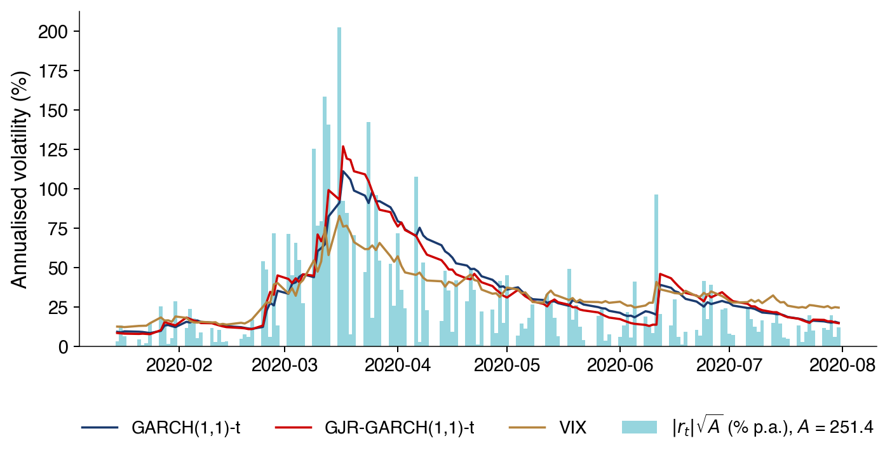
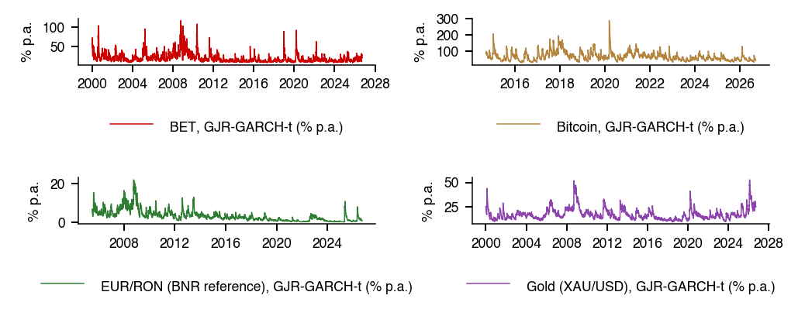
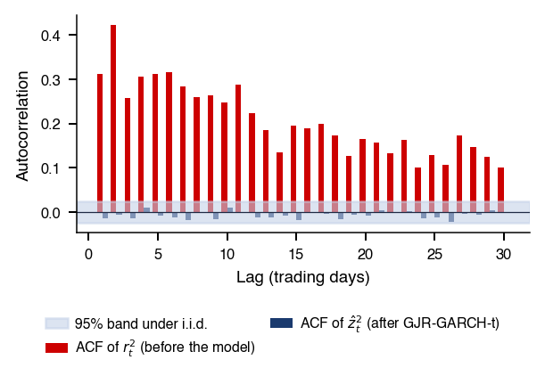
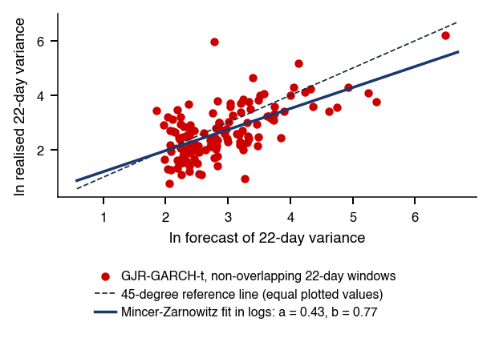
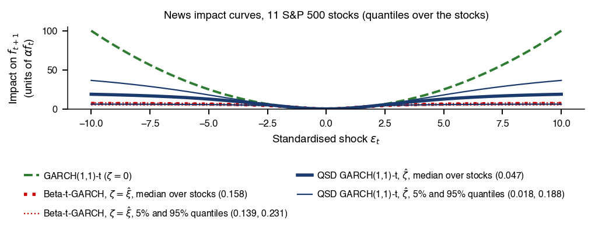

Bucharest University of Economic Studies IDA Institute Digital Assets Blockchain Research Center AI4EFin Artificial Intelligence for Energy Finance Romanian Academy, Institute for Economic Forecasting MSCA Digital Finance
“These are mean zero, serially uncorrelated processes with nonconstant variances conditional on the past, but constant unconditional variances. For such processes, the recent past gives information about the one-period forecast variance.” — Engle (1982)
S&P 500: the lag-1 autocorrelation is \(-0.099\) for daily returns and \(0.313\) for squared returns
the sign of a return is nearly unpredictable, its size is not
ARCH tests (autoregressive conditional heteroskedasticity) reject a constant variance in all six markets of the chapter
S&P 500: \(Q(10)\) on \(r_t^2\) is 6 135, against a 5% critical value of 18.3
GARCH(1,1), the generalised ARCH model, with Student-t innovations: persistence \(\hat\alpha+\hat\beta = 0.9948\) and a half-life of 132 days for the S&P 500
for Bitcoin and EUR/RON the estimate hits the bound \(\alpha+\beta = 1\): in the model, shocks never fade
Out of sample, 2016–2026 (2 693 one-day S&P 500 forecasts): GARCH(1,1)-t has a lower QLIKE (quasi-likelihood) loss than EWMA (exponentially weighted moving average) and than the mean of \(r^2\) over the last 20 days
These are mean zero, serially uncorrelated processes with nonconstant variances conditional on the past, but constant unconditional variances. For such processes, the recent past gives information about the one-period forecast variance.
Engle (1982) introduced ARCH processes (autoregressive conditional heteroskedasticity): serially uncorrelated returns whose conditional variance depends on past shocks. This is the chapter's question: if the recent past tells us something about tomorrow's variance, how well can we forecast risk? For the S&P 500, the lag-1 autocorrelation of daily returns is −0.099 and that of squared returns 0.313. For squared returns, all of the first 50 autocorrelations lie outside the ±0.024 band; for returns, only 15 do, and all are small. The ARCH tests reject a constant variance in all six markets of the chapter: the S&P 500, the BET, BET-TR, Bitcoin, EUR/RON and gold.
The GARCH(1,1) model of Bollerslev (1986) describes this dependence with a single variance recursion. Estimated with Student-t innovations, it shows persistence close to 1: for the S&P 500, \(\hat\alpha+\hat\beta = 0.9948\), and the half-life of a variance shock is 132 days. For Bitcoin and EUR/RON the estimate hits the bound \(\alpha+\beta = 1\), so in the model shocks never fade. Near this bound, the delta method gives symmetric intervals that can contain negative half-lives, and the usual tests must be replaced by tests on the boundary.
The forecasts are evaluated out of sample over 2016–2026: 2,693 one-day forecasts for the S&P 500, with the parameters re-estimated each January. The QLIKE (quasi-likelihood) loss remains appropriate when the true variance is replaced by a noisy proxy, \(r_t^2\). The lowest QLIKE loss belongs to GJR-t (0.731), the GARCH model with an asymmetric response to negative shocks. EWMA (exponentially weighted moving average) and the mean of \(r^2\) over the last 20 days lose clearly against GARCH-t (Diebold–Mariano statistics 3.47 and 4.10), but the models of the GARCH family are hard to separate from one another. The chapter therefore covers, besides the models, the inference: robust standard errors, tests on the boundary and the Model Confidence Set.
One-day-ahead volatility forecasts for the S&P 500, 2016–2026: the GJR-GARCH-t forecast (red) and EWMA with \(\lambda = 0.94\) (dark blue), against the realised proxy \(|r_t|\sqrt{A}\),\(A = 251.5\) (dots); annualised volatility in percent is on the vertical axis. Interactive chart: “Out-of-Sample Design and Forecast Paths, 2016–2026” →
What you will be able to do
Derive the long-run variance, the kurtosis and the half-life of the GARCH(1,1) model.
Compute multi-day variance forecasts and LR tests on the boundary.
Interpret GARCH, GJR and EGARCH estimates in six markets.
Interpret out-of-sample comparisons with QLIKE, the Diebold–Mariano test and the Model Confidence Set.
The chapter models the conditional variance of daily returns: the variance of tomorrow's return given everything known at today's close. Its starting point is an empirical regularity that every risk number depends on. Large price moves arrive in clusters, so the size of today's return carries information about the size of tomorrow's, even when its sign carries almost none. This section documents the regularity on six markets and states the two tests that decide whether a constant variance can be maintained.
ARCH, autoregressive conditional heteroskedasticity, names the property that the variance of the return depends on past shocks. The core of the chapter follows one line:
Volatility clustering and the tests for ARCH effects;
The GARCH (generalised ARCH) recursion with its persistence and half-life;
Estimation with Student-t innovations;
Multi-day forecasts;
Asymmetric variants (GJR and EGARCH);
Diagnostics on the standardised residuals;
The out-of-sample evaluation of the forecasts with the QLIKE loss and the Mincer–Zarnowitz and Diebold–Mariano tests.
The model is only half of the problem; the other half is inference about it. The chapter therefore treats the asymptotics of the quasi-maximum likelihood estimator (QMLE), the delta method when the persistence \(\alpha+\beta\) is close to 1, tests whose null lies on the boundary of the parameter space, residual tests corrected for estimated parameters, and two procedures for comparing many forecasts: the Giacomini–White test and the Model Confidence Set. Two research sections close the core path: a quasi score-driven volatility model and a discovery loop assisted by artificial intelligence (AI). Detailed examples and advanced topics are in Further Topics; the reference textbooks are Franke, Härdle & Hafner (2019) and, for the mathematical theory, Francq & Zakoïan (2019).
In brief
ARCH means AutoRegressive Conditional Heteroskedasticity: variance depends on past shocks
Core topics
Clustering and the ARCH tests; the GARCH recursion, persistence and half-life; estimation with Student-t innovations; forecasts; asymmetry (GJR, EGARCH); residual diagnostics; forecast evaluation with QLIKE, Mincer–Zarnowitz and Diebold–Mariano
Inference beyond the basic model
QMLE asymptotics, the delta method near \(\alpha+\beta = 1\), tests on the boundary, corrected residual tests, Giacomini–White and the Model Confidence Set
Two research sections: a quasi score-driven volatility model and an AI-assisted discovery loop
Detailed examples and advanced topics are in Further Topics, after the Conclusions
the footer button leads there; the Back button returns to the starting slide
What you should be able to do
derive the long-run variance, the kurtosis and the half-life of GARCH(1,1)
compute multi-day variance forecasts and LR tests on the boundary
interpret GARCH, GJR and EGARCH estimates in six markets
interpret out-of-sample comparisons with QLIKE, DM and the Model Confidence Set
Further Topics and Appendix: reading for familiarity
The crash of 19 October 1987 was not an isolated day: in the days that followed, markets kept moving by large amounts in both directions. The regularity was described long before formal models existed. Mandelbrot (1963) wrote that "large changes tend to be followed by large changes, of either sign". The phrase separates two properties of a return series that are easy to confuse: the direction of the next move and its size. Clustering concerns only the size.
Volatility clustering is stylised fact 6 of Chapter 1. Its practical consequence is that volatility enters every risk number used later in the course: Value at Risk (Chapter 7), the portfolio weights of Chapter 4 and option prices. A forecast of tomorrow's variance is therefore an input, not an end in itself. The chapter asks two questions about it: how good the forecast is, and whether valid statistical inference about the model that produces it is possible.
The chart shows the daily returns of the chapter's markets over the whole sample. Quiet periods, in which the returns stay in a narrow band, alternate with turbulent periods in which large returns of both signs follow one another. In the interactive version, the slider sets a threshold for the absolute return \(|r|\), in units of the series' standard deviation \(s\); the readout counts the days above the threshold and the share of those days followed by another such day within the next five days, compared with the share that independent days would give. The ▶ button raises the threshold step by step.
Question for the room On the S&P 500, how often is a day with |r| above 3 standard deviations followed by another such day within the next 5 days?
Answer
In 62% of the cases. The threshold is exceeded on 105 days (1.6% of the days); with independent days, the probability would be 8%. The share is 54% for BET and 32% for Bitcoin.
On the S&P 500 the threshold of three standard deviations is exceeded on 105 days, 1.6% of the sample. After such a day another one follows within five days in 62% of the cases; if the days were independent, the probability would be about 8%. The share is 54% for the BET and 32% for Bitcoin. Extreme days are thus far from independent, although, as the next frames show, their signs are close to unpredictable.
All returns in the chapter are daily log returns in percent, \(r_t = 100\,(\ln P_t - \ln P_{t-1})\), where \(P_t\) is the closing price or index level on day \(t\); the last close is that of 18 September 2026. Six series were chosen for their different regimes. The S&P 500 is the global benchmark and the BET (Bucharest Exchange Trading) index the local equity market, both from 2000. BET-TR, the total-return version of the BET with reinvested dividends, starts in 2014. Bitcoin (BTC) starts on 17 September 2014 and trades seven days a week. EUR/RON is the reference rate of the National Bank of Romania (BNR), a managed float, from 2005, and gold (XAU/USD) is a safe-haven asset, from 2000.
Equity indices and gold trade on weekdays only, and the raw price files contain rows that a data provider has filled in. A heuristic rule treats as a provider fill a row that repeats the previous close and shows no trading: reported zero volume, open equal to high, low and close, or an exact copy of the previous row. Such rows are dropped, with the reason kept, and checked against the exchange calendar; a genuine unchanged close, a zero return, is kept, and a missing volume is not treated as zero volume. The rule drops no days for the S&P 500, the BET and BET-TR, and 7 days for gold.
In the chart of the previous frame, quiet years alternate with turbulent months: 2008, March 2020 and April 2025 stand out in all three series shown, the S&P 500, the BET and Bitcoin. The complete list of series, with sources, sample sizes and sample moments, is in the Appendix.
In brief
Daily log returns \(r_t = 100\,(\ln P_t - \ln P_{t-1})\) in %, closes up to 18 September 2026
\(P_t\): closing price (index level) on day \(t\)
Six series, chosen for different market regimes
The S&P 500 (the global benchmark) and the BET (the local market), from 2000
BET-TR (the BET with reinvested dividends), from 2014
Bitcoin (BTC), from 17 September 2014, 7 days a week
EUR/RON (the BNR reference rate, a managed float), from 2005
Gold (XAU/USD), a safe-haven asset, from 2000
Equity indices and gold: weekdays only
A heuristic rule: a row that repeats the previous close and shows no trading (reported zero volume, open = high = low = close, or a copy of the previous row) is treated as a provider fill
Such rows are dropped, with the reason kept, and checked against the exchange calendar; a genuine unchanged close (a zero return) is kept
A missing volume is not treated as zero volume
Days dropped: 0 for the S&P 500, the BET and BET-TR, 7 for gold
In the chart (S&P 500, BET, Bitcoin), quiet years alternate with turbulent months
The sample autocorrelation at lag \(k\),\(\hat\rho_k = \widehat{\mathrm{Corr}}(x_t, x_{t-k})\), measures linear dependence between the series and its own past. Computed for \(x_t = r_t\) it measures the predictability of the return itself; computed for \(x_t = r_t^2\), the predictability of its size. The reference band \(\pm 1.96/\sqrt{n}\), where \(n\) is the number of returns, is the pointwise 95% range of \(\hat\rho_k\) for an i.i.d. series; for the S&P 500 it equals \(\pm 0.024\).
The chart shows the first 50 autocorrelations of the S&P 500 returns and of their squares. In the interactive version, the selector chooses the series and the slider the power \(\delta\) in \(|r|^\delta\), so that the same comparison can be made for absolute returns (\(\delta = 1\)) and for other powers; ▶ moves \(\delta\) step by step.
Question for the room At lag 1, the autocorrelation of S&P 500 returns is −0.099 and that of their squares 0.313; squared-return autocorrelations stay positive and persistent. What follows for modelling?
Answer
Dependence in return magnitudes can exist without strong linear dependence in returns. All 50 autocorrelations of r² lie outside the ±0.024 band; for r, 15 of 50 do, but all are small. Small autocorrelations do not imply independence, and squared-return autocorrelations do not measure sign-forecast accuracy. The ±0.024 band is a pointwise asymptotic reference under the i.i.d. assumption.
At lag 1 the autocorrelation is \(-0.099\) for \(r_t\) and \(0.313\) for \(r_t^2\). Of the first 50 autocorrelations of \(r_t\), 15 lie outside \(\pm 0.024\), but all are small; for \(r_t^2\) all 50 do, and they stay positive. Small autocorrelations of the returns do not imply independence: dependence in magnitudes can coexist with almost no linear dependence in levels.
The same series have heavy tails. The excess kurtosis, kurtosis minus 3, is 10.7 for the S&P 500, 11.1 for the BET and 12.0 for Bitcoin. Kurtosis presupposes a finite fourth moment, which the tail estimates of Chapter 1 call into question. The object to model is therefore the conditional variance \(\sigma_t^2 = \mathrm{Var}(r_t \mid \mathcal{F}_{t-1})\), where \(\mathcal{F}_{t-1}\) is the information available at the close of day \(t-1\).
In brief
Sample autocorrelation at lag \(k\): \(\hat\rho_k = \widehat{\Corr}(x_t, x_{t-k})\), computed for \(x_t = r_t\) and \(x_t = r_t^2\)
Band \(\pm 1.96/\sqrt{n}\) (\(n\): number of returns): 95% range of \(\hat\rho_k\) if the series were i.i.d.
S&P 500, lag 1: \(-\)0.099 for \(r_t\), 0.313 for \(r_t^2\)
For \(r_t\), 15 of 50 autocorrelations lie outside \(\pm\)0.024, but all are small
For \(r_t^2\), all 50 do
Heavy tails too: excess kurtosis (kurtosis minus 3) 10.7 (S&P 500), 11.1 (BET), 12.0 (Bitcoin)
The kurtosis requires a finite fourth moment, which Chapter 1 questions
Object to model: \(\sigma_t^2 = \Var(r_t \mid \mathcal{F}_{t-1})\), with \(\mathcal{F}_{t-1}\) the information at the close of day \(t-1\)
The null hypothesis of no clustering states that the conditional variance \(\mathrm{Var}(r_t \mid \mathcal{F}_{t-1})\) is constant. Under it, squared returns are serially uncorrelated, and both standard tests look for autocorrelation in the squares. The first, proposed by McLeod & Li (1983), applies the Ljung–Box statistic to \(r_t^2\):
where \(\hat\rho_k\) is the autocorrelation of \(r_t^2\) at lag \(k\) and \(n\) the sample size. The chapter uses \(m = 10\) lags, two trading weeks. The statistic measures the joint size of the first \(m\) autocorrelations; under \(H_0\) it is \(\chi^2_{10}\), and the 5% critical value is 18.3.
The second is the Lagrange Multiplier (LM) test of Engle (1982). Let \(\hat\varepsilon_t = r_t - \bar r\) be the demeaned return, with \(\bar r\) the sample mean. The test regresses \(\hat\varepsilon_t^2\) on a constant and on \(\hat\varepsilon_{t-1}^2, \ldots, \hat\varepsilon_{t-5}^2\), five lags or one trading week, and uses \(LM = nR^2\), where \(R^2\) is the coefficient of determination of this regression. Under \(H_0\) the five slopes are zero and \(LM\) is \(\chi^2_5\), with 5% critical value 11.1. A large \(LM\) means that past squared shocks predict today's.
Both statistics are portmanteau measures of the same feature. \(Q\) uses autocorrelations directly, LM a regression; neither specifies the form of the dependence, which is the task of the models in the next section.
In brief
\(H_0\): no clustering, \(\Var(r_t \mid \mathcal{F}_{t-1})\) constant
Both tests look for autocorrelation in squared returns
McLeod–LiMcLeod & Li (1983): the Ljung–Box statistic applied to \(r_t^2\)
In all six markets every statistic lies far above its critical value, with all \(p\)-values below 0.001. On the S&P 500, \(Q(10)\) on \(r_t^2\) is 6,135 against the critical value 18.3, and \(LM(5)\) is 1,685 against 11.1. Clustering is present in equities, Bitcoin, EUR/RON and gold. The \(\chi^2\)\(p\)-values require at least a finite fourth moment of \(r_t\), which the Hill estimates of Chapter 1 put in doubt; with statistics of this size, however, the decision does not depend on the exact reference distribution.
The size of the statistics should not be read as the strength of the effect across series. \(Q\) and LM grow with the sample size \(n\), so they are not comparable across series of different lengths: BET-TR starts in 2014 and Bitcoin in 2014, the other series in 2000 or 2005. The lag-1 autocorrelation of \(r^2\) is the more comparable measure; by it the weakest effects are those of gold (0.110) and Bitcoin (0.137), and the strongest those of EUR/RON (0.342) and the BET (0.330).
The alternative of an ARCH test is one-sided, since variance weights cannot be negative, and the two-sided \(\chi^2\) test wastes power; the one-sided score tests are in the Appendix. What the result supports is a description: the conditional variance is not constant in any of the six markets.
In brief
Every statistic is far above its critical value (all \(p < 0.001\))
Clustering in equities, Bitcoin, EUR/RON and gold
The \(\chi^2\) p-values require at least a finite fourth moment of \(r_t\), which the Hill estimates of Chapter 1 put in doubt
The weakest effect, by \(\hat\rho_1(r^2)\), is for gold (0.110) and Bitcoin (0.137)
\(Q\) and LM grow with \(n\), so they are not comparable across series of different lengths
The six markets share the two features that the rest of the chapter models: returns whose sign is close to unpredictable, and squared returns with strong, slowly decaying autocorrelation. The ARCH tests reject a constant variance everywhere. The next section gives the models that describe this dependence.
Variance Dynamics
The previous section showed that the size of returns is predictable. This section writes down models for the conditional variance and derives their properties: the ARCH model, its generalisation GARCH, the ARMA representation of squared shocks, the conditions for a finite variance and a finite kurtosis, the multi-step forecast and the half-life of a variance shock. The section ends with EWMA, the industry benchmark, which is a GARCH model without mean reversion.
The return is decomposed into a mean and a shock, \(r_t = \mu + \varepsilon_t\), and the shock into a scale and an innovation, \(\varepsilon_t = \sigma_t z_t\). Here \(\mu\) is the mean return, \(\varepsilon_t\) the unexpected part of the return, \(\sigma_t\) the conditional volatility, and the innovations \(z_t\) are i.i.d. with mean 0 and variance 1. The conditional variance is \(\sigma_t^2 = \mathrm{Var}(r_t \mid \mathcal{F}_{t-1})\), and the unconditional variance is its mean, \(\sigma^2 = \mathbb{E}\sigma_t^2\).
In the ARCH(\(q\)) model of Engle (1982), today's variance is a constant plus a weighted sum of the last \(q\) squared shocks:
In (5.2),\(q\) is the number of lags, \(\omega > 0\) the variance floor and \(\alpha_i \geq 0\) the weight of the shock \(i\) days ago. The sign restrictions guarantee that the variance is positive. A large shock yesterday, a large \(\varepsilon_{t-1}^2\), raises today's variance, so clustering is built into the model.
For ARCH(1), taking expectations gives \(\sigma^2 = \omega + \alpha_1\sigma^2\), so the unconditional variance is \(\sigma^2 = \omega/(1-\alpha_1)\), finite if \(\alpha_1 < 1\). The returns are serially uncorrelated, but their conditional variance moves with the past, exactly the property quoted at the opening of the chapter. Engle received the 2003 Nobel Prize for this work; the history is in the Appendix.
In brief
Setting: \(r_t = \mu + \varepsilon_t\), \(\varepsilon_t = \sigma_t z_t\), innovations \(z_t\) i.i.d. with mean 0 and variance 1
\(\mu\): mean return; \(\varepsilon_t\): shock (unexpected part of the return); \(\sigma_t\): conditional volatility
Clustering in real data lasts for months, so an ARCH model that fits it needs a large \(q\) and many parameters. GARCH, generalised autoregressive conditional heteroskedasticity, solves the problem by letting the variance depend on its own past. The GARCH(1,1) model of Bollerslev (1986) is
with \(\omega > 0\),\(\alpha \geq 0\) and \(\beta \geq 0\). The parameter \(\alpha\) measures the reaction to news, the latest squared shock, and \(\beta\) the memory of past variance.
Substituting the recursion into itself backwards gives, for \(\beta < 1\),
where \(j\) is the age of the shock in days and \(\alpha\beta^{j-1}\) its weight. GARCH(1,1) is therefore an ARCH(\(\infty\)) with geometrically declining weights, described by three parameters instead of many.
GARCH(\(p\),\(q\)) adds more lags: \(p\) lags of \(\sigma^2\) and \(q\) lags of \(\varepsilon^2\). In practice the additional lags rarely help, and GARCH(1,1) is the workhorse of the field; Hansen & Lunde (2005) compare a large number of volatility models and find it hard to beat. The rest of the chapter uses the (1,1) order throughout.
A full specification has two parts: the recursion for the variance and the distribution of the standardised innovation \(z_t\). The chapter's labels name both. The model name describes the variance dynamics, and a suffix describes the law of \(z_t\).
GARCH-N is GARCH with innovations from the Normal distribution. GARCH-t is GARCH with Student-t innovations, which allow heavier tails. GJR-t, or GJR-GARCH-t, combines the asymmetric variance of Glosten, Jagannathan and Runkle, treated in the asymmetry section, with Student-t innovations. The same convention gives EGARCH-t and GJR-skewed-t later in the chapter.
In brief
The model name describes the variance dynamics
The suffix describes the law of the standardised innovation
GARCH-N: GARCH with innovations from the Normal distribution
GARCH-t: GARCH with Student-t innovations, which allow heavier tails
GJR-t (or GJR-GARCH-t)
Asymmetric Glosten–Jagannathan–Runkle variance (Asymmetry section) with Student-t innovations
The properties of GARCH(1,1) are easiest to read from an equivalent model for the squared shocks. Define \(u_t = \varepsilon_t^2 - \sigma_t^2\), the surprise in the squared shock; by construction \(\mathbb{E}[u_t \mid \mathcal{F}_{t-1}] = 0\). Adding \(u_t\) to both sides of (5.3) and writing \(\sigma_{t-1}^2 = \varepsilon_{t-1}^2 - u_{t-1}\) gives
Equation (5.5) is an autoregressive moving-average model, ARMA(1,1), in \(\varepsilon_t^2\), with autoregressive coefficient \(\alpha+\beta\) and moving-average coefficient \(-\beta\).
The consequence is that the autocorrelations of \(\varepsilon_t^2\),\(\rho_k = \mathrm{Corr}(\varepsilon_t^2, \varepsilon_{t-k}^2)\), decay geometrically, \(\rho_k = \rho_1 (\alpha+\beta)^{k-1}\). If \(\mathbb{E}\varepsilon_t^4 < \infty\), the first autocorrelation is \(\rho_1 = \alpha(1-\beta^2-\alpha\beta)/(1-\beta^2-2\alpha\beta)\); the derivation is exercise A6 of Seminar 5. Because \(\alpha+\beta\) governs how slowly the dependence in squared shocks dies out, it is called the persistence of volatility.
For the S&P 500, GARCH-N estimated by Gaussian QMLE gives \(\hat\alpha = 0.120\) and \(\hat\beta = 0.860\). The implied autocorrelations are \(\rho_1 = 0.356\) and \(\rho_{10} = 0.298\), against the sample values \(\hat\rho_1 = 0.313\) and \(\hat\rho_{10} = 0.248\): the model reproduces the order of magnitude and the slow decay, but overstates the level.
In brief
Define \(u_t = \varepsilon_t^2 - \sigma_t^2\), the surprise in the squared shock (\(\E[u_t \mid \mathcal{F}_{t-1}] = 0\))
Then \(\varepsilon_t^2 = \omega + (\alpha+\beta)\,\varepsilon_{t-1}^2 + u_t - \beta\,u_{t-1}\)
Obtained by adding \(u_t\) to both sides of the GARCH recursion and writing \(\sigma_{t-1}^2 = \varepsilon_{t-1}^2 - u_{t-1}\)
An AutoRegressive Moving Average model, ARMA(1,1), in \(\varepsilon_t^2\) with autoregressive coefficient \(\alpha+\beta\) and moving-average coefficient \(-\beta\)
Consequence: the autocorrelations of \(\varepsilon_t^2\) decay geometrically, \(\rho_k = \rho_1 (\alpha+\beta)^{k-1}\)
\(\rho_k = \Corr(\varepsilon_t^2, \varepsilon_{t-k}^2)\): autocorrelation of squared shocks at lag \(k\)
\(\rho_1 = \alpha(1-\beta^2-\alpha\beta)/(1-\beta^2-2\alpha\beta)\) if \(\E\varepsilon_t^4 < \infty\) (Seminar 5, A6)
S&P 500, GARCH-N by Gaussian QMLE (\(\hat\alpha = 0.120\), \(\hat\beta = 0.860\)): \(\rho_1 = 0.356\) and \(\rho_{10} = 0.298\), against the sample values \(\hat\rho_1 = 0.313\) and \(\hat\rho_{10} = 0.248\)
\(\alpha+\beta\) is therefore called the persistence of volatility
The process is covariance stationary if \(\alpha + \beta < 1\). Taking expectations in (5.3), with \(\mathbb{E}\varepsilon_{t-1}^2 = \mathbb{E}\sigma_{t-1}^2\), gives \(\mathbb{E}\sigma_t^2 = \omega + (\alpha+\beta)\,\mathbb{E}\sigma_{t-1}^2\); setting \(\mathbb{E}\sigma_t^2 = \mathbb{E}\sigma_{t-1}^2\) yields the long-run variance
In the chapter, \(\sigma^2\) denotes this long-run variance of the model (Seminar 5 writes \(\bar\sigma^2\)),\(\hat\sigma^2 = \hat\omega/(1-\hat\alpha-\hat\beta)\) its estimate, and \(s^2\) the sample variance of \(r_t\).
The boundary case \(\alpha + \beta = 1\) is the integrated GARCH, IGARCH. Its unconditional variance is infinite, yet the process need not be explosive. If \(\alpha > 0\) and \(z_t^2\) is non-degenerate, the process is still strictly stationary: the condition of Nelson (1990),\(\mathbb{E}\ln(\alpha z_t^2 + \beta) < 0\), holds by Jensen's inequality, since \(\mathbb{E}\ln(\alpha z_t^2 + \beta) < \ln \mathbb{E}(\alpha z_t^2 + \beta) = \ln(\alpha+\beta) = 0\). Covariance stationarity and strict stationarity therefore part ways exactly where the estimates of several series in this chapter lie.
A practical variant uses (5.6) in reverse. Variance targeting fixes \(\omega = s^2 (1-\alpha-\beta)\), so that the long-run variance equals the sample variance and only \(\alpha\) and \(\beta\) are estimated.
In brief
Covariance stationarity: \(\alpha + \beta < 1\); then
Derivation: take expectations in the recursion, \(\E\sigma_t^2 = \omega + (\alpha+\beta)\,\E\sigma_{t-1}^2\), and set \(\E\sigma_t^2 = \E\sigma_{t-1}^2\)
IGARCH (integrated GARCH): \(\alpha + \beta = 1\)
The unconditional variance is infinite
Yet, if \(\alpha > 0\) and \(z_t^2\) is non-degenerate, the process is still strictly stationary: the condition \(\E\ln(\alpha z_t^2 + \beta) < 0\)Nelson (1990) holds by Jensen, since \(\E\ln(\alpha z_t^2 + \beta) < \ln(\alpha+\beta) = 0\)
Notation: \(\sigma^2\) is the model's long-run variance (Seminar 5 writes \(\bar\sigma^2\))
\(\hat\sigma^2 = \hat\omega/(1-\hat\alpha-\hat\beta)\): its estimate
\(s^2\): the sample variance of \(r_t\)
Variance targeting: fix \(\omega = s^2 (1-\alpha-\beta)\), so that the long-run variance equals \(s^2\) and only \(\alpha\), \(\beta\) are estimated
With Normal innovations, GARCH(1,1) returns are still heavy-tailed. The kurtosis \(K = \mathbb{E}\varepsilon_t^4 / (\mathbb{E}\varepsilon_t^2)^2\), equal to 3 for the Normal distribution and above 3 for heavy tails, is
finite only if \((\alpha+\beta)^2 + 2\alpha^2 < 1\); the derivation is exercise A4 of Seminar 5. ARCH(1) is the case \(\beta = 0\):\(K = 3(1-\alpha^2)/(1-3\alpha^2)\), finite only if \(\alpha < 1/\sqrt{3}\), and above 3 whenever \(\alpha > 0\).
For the S&P 500, GARCH-N estimated on 2000–2026 gives \(\hat\alpha = 0.120487\) and \(\hat\beta = 0.860062\). The moment condition \((\hat\alpha+\hat\beta)^2 + 2\hat\alpha^2 = 0.990509\) is just below 1, and (5.7) gives \(K = 12.2\), against a sample kurtosis of the returns of 13.7 (excess kurtosis 10.7). Close to the moment boundary, the denominator of (5.7) is a small difference, and \(K\) is very sensitive to rounding the estimates; the Appendix shows how much.
Clustering alone therefore generates much of the fat tails of daily returns. Heavy-tailed innovations \(z_t\) may contribute further, but the gap between 12.2 and 13.7 is not an identified decomposition of the tails into the two sources.
In brief
With Normal \(z_t\), the kurtosis of \(\varepsilon_t\) is \(K = \dfrac{3\,[1-(\alpha+\beta)^2]}{1-(\alpha+\beta)^2-2\alpha^2}\)
\(K = \E\varepsilon_t^4 / (\E\varepsilon_t^2)^2\): 3 for the Normal distribution, above 3 for heavy tails
Finite only if \((\alpha+\beta)^2 + 2\alpha^2 < 1\) (Seminar 5, A4)
ARCH(1) is the case \(\beta = 0\): \(K = 3(1-\alpha^2)/(1-3\alpha^2)\), finite only if \(\alpha < 1/\sqrt{3}\): heavy tails even with Normal innovations
The chart compares two simulated series with the same unconditional variance, equal to 1. The top panel shows i.i.d. Normal returns; the bottom panel a GARCH(1,1) path with \(\omega = 0.02\),\(\alpha = 0.10\) and \(\beta = 0.88\), with the bands \(\pm 2\sigma_t\). In the interactive version, the first slider sets the news reaction \(\alpha\) and the second the persistence \(\alpha + \beta\), with \(\omega = 1 - \alpha - \beta\) so that the unconditional variance stays 1; ▶ moves the parameters step by step.
Question for the room The innovations z are Normal. Do the returns of a GARCH(1,1) with α = 0.10 and β = 0.88 have fat tails?
Answer
Yes, the unconditional return distribution has theoretical excess kurtosis of approximately 3.06. The fourth moment is finite because 0.98² + 2 × 0.10² = 0.9804 < 1. The conditional distribution is Normal; the unconditional distribution mixes different variances. Estimated excess kurtosis is 0.40 on the page's 2,000-day path and 2.47 on the lecture's million-day path: kurtosis is estimated imprecisely on short samples.
Quiet stretches and bursts appear only in the GARCH path, although both series have the same unconditional variance. The GARCH innovations are Normal, yet the returns are fat-tailed: a mixture of Normal distributions with different variances has heavier tails than any single Normal distribution. For these parameters \((\alpha+\beta)^2 + 2\alpha^2 = 0.98^2 + 2\times0.10^2 = 0.9804 < 1\), so the fourth moment is finite and the theoretical excess kurtosis is about 3.06.
Sample kurtosis is a poor estimator here. On the page's path of 2,000 days the estimated excess kurtosis is 0.40, and on a simulated path of one million days it is 2.47 (Appendix). A kurtosis computed from a few years of data is a weak basis for judging whether a model reproduces the tails.
The multi-step forecast follows from (5.3) by iterated expectations. Since \(\mathbb{E}[\varepsilon_{t+h-1}^2 \mid \mathcal{F}_t] = \mathbb{E}[\sigma_{t+h-1}^2 \mid \mathcal{F}_t]\) for \(h \geq 2\),
where \(h\) is the forecast horizon in days and \(\sigma_{t+1}^2\) the one-day-ahead variance, known at \(t\). The gap between the forecast and the long-run variance shrinks by the factor \(\alpha+\beta\) every day.
The half-life is the number of days after which half of a variance shock has gone. Setting \((\alpha+\beta)^{h} = 0.5\) gives
\[h_{1/2} = \frac{\ln 0.5}{\ln(\alpha+\beta)}.\]
(5.9)
The half-life is 13.5 days for \(\alpha+\beta = 0.95\), 69 days for 0.99 and 138 days for 0.995. Small changes in \(\alpha+\beta\) near 1 thus imply very different half-lives, because \(\ln(\alpha+\beta)\) tends to zero in the denominator of (5.9). The estimation uncertainty in \(\alpha+\beta\) therefore matters a great deal for any statement about how long a shock lasts; the next section quantifies it, and exercises A2 and B4 of Seminar 5 work through it.
A toy GARCH(1,1), not fitted to any data, makes the forecast formulas concrete. With \(\omega = 0.04\),\(\alpha = 0.08\) and \(\beta = 0.90\), the persistence is \(p = \alpha+\beta = 0.98\), the long-run variance \(\sigma^2 = 0.04/0.02 = 2\) and the half-life \(\ln 0.5/\ln 0.98 \approx 34.3\) days. Suppose a turbulent day leaves \(\sigma_{t+1}^2 = 4\), twice the long-run level. By (5.8), the forecast for day 2 is \(2 + 0.98 \times (4 - 2) = 3.96\): the gap to \(\sigma^2\) shrinks by 2% a day.
Risk over \(H\) days needs the variance of the sum of \(H\) daily returns. Daily shocks are uncorrelated, so this variance is the sum of the daily variance forecasts, a geometric sum:
For \(H = 5\),\(V_5 = 10 + 2 \times (1-0.98^5)/0.02 = 10 + 2 \times 4.804 = 19.61\). The square-root-of-time rule, \(V_H = H\,\sigma_{t+1}^2\), which makes the \(H\)-day volatility \(\sqrt{H}\) times the one-day volatility, gives \(5 \times 4 = 20\): too high, because it ignores the decay of the forecasts towards \(\sigma^2\).
After a calm day, \(\sigma_{t+1}^2 = 1\), the same formula gives \(V_5 = 10 - 4.804 = 5.20\), above the rule's \(5 \times 1 = 5\). The rule is now too low, as in the S&P 500 example of the forecasting section. The direction of the error depends only on the sign of \(\sigma_{t+1}^2 - \sigma^2\).
In brief
Toy GARCH(1,1), not fitted to any data: \(\omega = 0.04\), \(\alpha = 0.08\), \(\beta = 0.90\)
with decay factor \(\lambda \in (0,1)\), set to \(\lambda = 0.94\) for daily data and zero-mean returns. The weights on past squared returns, \((1-\lambda)\lambda^{j-1}\), decline geometrically, so the most recent days count most. Comparing with (5.3) shows that EWMA is an IGARCH(1,1) with \(\omega = 0\),\(\alpha = 1-\lambda\) and \(\beta = \lambda\), with no parameter to estimate.
The three models differ in their multi-step forecasts. Write \(\mathbb{E}_t[\cdot] = \mathbb{E}[\cdot \mid \mathcal{F}_t]\) for the expectation given the information at the close of day \(t\). Under EWMA the forecast is flat, \(\mathbb{E}_t\sigma_{t+h}^2 = \sigma_{t+1}^2\) for every \(h\). Under IGARCH with \(\omega > 0\) it rises linearly, \(\mathbb{E}_t\sigma_{t+h}^2 = \sigma_{t+1}^2 + (h-1)\,\omega\). Under a stationary GARCH it is pulled towards \(\sigma^2\) at the rate \(\alpha+\beta\), by (5.8).
Only the stationary GARCH has mean reversion: the other two carry today's level, or more, to every horizon. EWMA serves as a benchmark without estimated parameters in the forecast comparison of the forecast-evaluation section.
Stationary GARCH: pulled towards \(\sigma^2\) at the rate \(\alpha+\beta\)
EWMA serves as a benchmark in the forecast comparison
Section summary
GARCH(1,1) describes clustering with three parameters. Its persistence \(\alpha+\beta\) governs the decay of the autocorrelations of squared shocks, the speed of mean reversion and the half-life; the condition \(\alpha+\beta < 1\) gives a finite variance, and the stronger condition \((\alpha+\beta)^2 + 2\alpha^2 < 1\) a finite kurtosis. EWMA is the special case without mean reversion. The next section estimates the parameters and measures how precisely they are known.
Estimation and Uncertainty
The parameters of a GARCH model are estimated by maximum likelihood, numerically, under sign and stationarity constraints. Three questions follow from the previous section. Which likelihood should be used when the innovations are not Normal? How precise are functions of the parameters, such as the half-life, when the persistence is close to 1? How should hypotheses be tested when the null value lies on the boundary of the parameter space, as for IGARCH? This section answers them on the S&P 500.
Maximum likelihood estimation (MLE) of \(\theta = (\mu, \omega, \alpha, \beta)\) rests on a simple observation: given \(\theta\), the recursion (5.3) produces the whole path \(\sigma_1^2(\theta), \ldots, \sigma_n^2(\theta)\). Each day contributes the density of \(\varepsilon_t = r_t - \mu\) given the past, so the likelihood factorises in time. With Normal innovations the log-likelihood is
The maximiser has no closed form. It is found by numerical optimisation under \(\omega>0\),\(\alpha,\beta\geq 0\) and \(\alpha+\beta\leq 1\). The Python package `arch` imposes \(\alpha+\beta \leq 1\), a closed set, so an estimate can sit exactly on the bound; this happens for Bitcoin and EUR/RON in the six-market table.
Two practical details matter:
The recursion needs a start-up value: \(\sigma_1^2\) is a backcast from the first squared residuals, and its effect fades at rate \(\beta\).
The scale matters for the optimiser: returns are measured in percent, so that the variance is of order 1. EUR/RON has a daily standard deviation of about 0.28%, so it is fitted on \(10\,r_t\); on unscaled returns the optimiser stops at a local optimum.
In brief
Maximum Likelihood Estimation (MLE) of \(\theta = (\mu, \omega, \alpha, \beta)\)
Given \(\theta\), the recursion produces \(\sigma_1^2(\theta), \ldots, \sigma_n^2(\theta)\)
The Normal distribution for \(z_t\) is a convenient but restrictive choice. Three alternatives are standard, each rescaled to unit variance. The Student-t innovation of Bollerslev (1987) is \(z_t = \sqrt{(\nu-2)/\nu}\; t_\nu\), where \(t_\nu\) is a standard Student-t variable with variance \(\nu/(\nu-2)\), so that \(z_t\) has variance 1 for \(\nu > 2\). The degrees of freedom \(\nu\) control the tails: the smaller \(\nu\), the heavier the tails, and the fourth moment exists only for \(\nu > 4\).
The skewed-t distribution of Hansen (1994) adds an asymmetry parameter \(\lambda \in (-1, 1)\); with \(\lambda < 0\) the left tail is longer, so large losses are more likely than large gains. The Generalised Error Distribution (GED) of Nelson (1991) has density proportional to \(\exp(-\tfrac{1}{2}|z/\lambda_\nu|^{\nu})\), with shape parameter \(\nu > 0\) and a scale constant \(\lambda_\nu\) that gives unit variance. The case \(\nu = 2\) is the Normal distribution, \(\nu = 1\) the Laplace distribution, and \(\nu < 2\) gives heavier tails.
In brief
Student-tBollerslev (1987): \(z_t = \sqrt{(\nu-2)/\nu}\; t_\nu\), unit variance for \(\nu > 2\)
\(t_\nu\): a standard Student-t variable, variance \(\nu/(\nu-2)\); the factor rescales it to variance 1
\(\nu\) (degrees of freedom): the smaller \(\nu\), the heavier the tails; the fourth moment exists only for \(\nu > 4\)
Skewed-tHansen (1994): adds an asymmetry parameter \(\lambda \in (-1, 1)\)
\(\lambda < 0\): the left tail is longer (large losses more likely than large gains)
Generalised Error Distribution (GED)Nelson (1991): density \(\propto \exp(-\tfrac{1}{2}|z/\lambda_\nu|^{\nu})\)
where \(\Gamma\) is the gamma function and \(\nu > 2\) the degrees of freedom of the unit-variance innovation. As \(\nu \to \infty\),\(\ell_t\) converges to the Normal contribution in (5.12).
The Student-t is the default for a practical reason: a single extra parameter, \(\nu\), gives symmetric heavy tails. The last term of (5.13) grows only logarithmically in \(\varepsilon_t^2\), whereas the Normal term \(\varepsilon_t^2/\sigma_t^2\) grows linearly, so a single extreme day has less influence on the Student-t estimates.
In brief
Day \(t\)'s contribution to the GARCH-t log-likelihood, the chapter's baseline model (\(\varepsilon_t = r_t - \mu\))
The Gaussian quasi-maximum likelihood estimator (QMLE) maximises the Normal likelihood (5.12) even if \(z_t\) is not Normal (Bollerslev & Wooldridge, 1992). The Normal \(\ell(\theta)\) is used as an estimation criterion, not as a claim about the distribution of \(z_t\). Let \(\theta_0\) be the true parameter value and \(\hat\theta\) the estimate, the maximiser of \(\ell\).
For GARCH(1,1) the QMLE is consistent, \(\hat\theta \to \theta_0\) as \(n \to \infty\), under four conditions given by Berkes, Horváth & Kokoszka (2003) and Francq & Zakoïan (2004). The process must be strictly stationary, \(\mathbb{E}\ln(\alpha z_t^2 + \beta) < 0\). The true \(\alpha_0\) must be positive, otherwise \(\beta\) is not identified, and \(\beta_0 < 1\). The true value must lie in a compact, closed and bounded, parameter set, and \(z_t^2\) must be non-degenerate, that is, not a constant.
No moment condition on \(\varepsilon_t\) is needed for consistency, so it holds even for IGARCH. The moment conditions enter only at the next step, the asymptotic distribution and the standard errors, treated in Further Topics.
The table reports the GARCH(1,1)-t estimates for the S&P 500, 2000–2026: \(\hat\omega = 0.0157\),\(\hat\alpha = 0.122\),\(\hat\beta = 0.872\),\(\hat\nu = 6.25\) and a mean \(\hat\mu = 0.079\%\) per day. The robust standard errors are close to the classical ones: the ratio is 1.06 for \(\hat\alpha\) and 1.08 for \(\hat\beta\). The full table, with every standard error, is in exercise B1 of Seminar 5.
The estimates have a clear reading:
The large \(\hat\beta\) means that the memory of past variance dominates;
\(\hat\alpha\) is a moderate reaction to news;
\(\hat\nu = 6.25\) degrees of freedom indicate tails much heavier than Normal.
The persistence \(\hat\alpha+\hat\beta = 0.9948\) gives, by (5.9), a half-life of 132 days.
The implied long-run volatility is \(\sqrt{251.5\,\hat\omega/(1-\hat\alpha-\hat\beta)} = 27.4\%\) a year, where \(A = 251.5\) is the number of returns a year. It lies well above the sample volatility of 19.2%. The reason is the denominator of (5.6): dividing by \(1-\hat\alpha-\hat\beta\), a small and imprecisely estimated number, makes the long-run level itself imprecise, as the next frames show.
The delta method approximates the standard error of a smooth function of the parameters by linearising it around the estimate. The chart shows what this approximation does to the half-life \(h(p) = \ln 0.5/\ln p\) of the S&P 500, where \(p = \alpha+\beta\). In the interactive version, the slider moves the persistence \(p\) between 0.975 and 0.99995; the left panel shows the half-life curve and its delta-method tangent at the chosen \(p\), and the right panel the implied long-run volatility. The ▶ button moves \(p\) towards 1.
Question for the room The estimated half-life for the S&P 500 is 132 days, with a standard error of 118 days, and 132 ± 1.96 × 118 has a lower endpoint of −99 days. We replace this negative endpoint with zero. Does this justify approximately 95% coverage?
Answer
No. Removing negative values does not justify coverage. The problem is the curvature of h(p) near 1: the delta-method tangent falls below zero. Transforming the p < 1 portion of the persistence interval, [0.9856, 1.0039], gives a lower endpoint of about 48 days and no finite upper endpoint; values p ≥ 1 do not describe a shock that halves.
At the estimate \(\hat p = 0.994769\), the curve \(h(p)\) is very steep and convex, and the tangent falls below zero within the 95% interval for \(p\). The symmetric delta-method interval for the half-life, 132 ± 1.96 × 118 days, has a lower endpoint of −99 days. Truncating it at zero does not repair the coverage, because the problem is the curvature of \(h(p)\) near 1, not the sign of the endpoint. The next frame gives the numbers and the alternative.
Let \(g(\theta)\) be a smooth function of the parameters with gradient \(\nabla g\), for example the long-run volatility or the half-life. The delta method approximates its standard error by
\[\widehat{\mathrm{SE}}\,g(\hat\theta) \approx \sqrt{\nabla g^\top \hat V \nabla g},\]
(5.14)
where \(\hat V\) is the robust covariance matrix of \((\hat\omega, \hat\alpha, \hat\beta)\). For the S&P 500 the long-run volatility is 27.4% a year with a standard error of 11.0 percentage points.
For the half-life, \(h = \ln 0.5/\ln p\) with \(p = \alpha+\beta\). At \(\hat p = 0.994769\) the derivative is \(\partial h/\partial p = 25{,}330\). With \(\widehat{\mathrm{SE}}(\hat p) = 0.0047\),(5.14) gives \(\widehat{\mathrm{SE}}(\hat h) \approx 118\) days, and \(\hat h \pm 1.96\,\widehat{\mathrm{SE}}\) includes negative half-lives. The linearisation fails, because \(h(p)\) is far from linear over the range of plausible \(p\).
The remedy is to build the interval where the estimator is approximately Normal, on \(p\), and transform it. The 95% interval \([0.9856; 1.0039]\) for \(p\) gives \(h \in [48; \infty)\) days: the half-life is at least about seven weeks, with no finite upper bound, because the interval contains \(p = 1\). Whether \(p = 1\) is plausible is a separate question, which needs a test on the boundary of the parameter space.
In brief
\(g(\theta)\): a smooth function of the parameters, with gradient \(\nabla g\)
E.g. the long-run volatility or the half-life
Delta method: \(\widehat{\mathrm{SE}}\,g(\hat\theta) \approx \sqrt{\nabla g' \hat V \nabla g}\), with \(\hat V\) the robust covariance of \((\hat\omega, \hat\alpha, \hat\beta)\)
For the half-life: \(p = \alpha+\beta\) and \(h = \ln 0.5/\ln p\)
Long-run volatility 27.4% p.a., SE 11.0 percentage points
Half-life: \(\partial h/\partial p = 25\,330\) at \(\hat p = 0.994769\)
\(\widehat{\mathrm{SE}}(\hat p) = 0.0047\), so \(\widehat{\mathrm{SE}}(\hat h) \approx 118\) days
\(\hat h \pm 1.96\,\widehat{\mathrm{SE}}\) includes negative half-lives: the linearisation fails
Transform the interval for \(p\) instead: \([0.9856; 1.0039]\) gives \(h \in [48; \infty)\)
Whether \(p = 1\) is plausible needs a boundary test (next slides)
The likelihood ratio (LR) statistic is \(LR = 2(\ell_1 - \ell_0)\), where \(\ell_1\) and \(\ell_0\) are the maximised log-likelihoods without and with the restriction. Its null distribution depends on where the restricted value lies. For an interior restriction, such as \(\gamma = 0\) in GJR against GARCH with \(\alpha > 0\), the usual \(\chi^2_1\) applies, with 5% critical value 3.84.
When one parameter lies on the boundary under \(H_0\) and the others are identified and interior, the limit is the mixture \(\tfrac12\chi^2_0 + \tfrac12\chi^2_1\) of Self & Liang (1987) and Andrews (2001). With probability one half the estimate sits at the bound and \(LR = 0\), otherwise \(LR\) is \(\chi^2_1\). The 5% critical value is 2.71. Two cases of the chapter belong here: Normal against Student-t innovations, where \(H_0\) is \(1/\nu = 0\), and IGARCH, \(\alpha + \beta = 1\).
Two further cases have non-standard limits that must be simulated. If \(H_0\) leaves a nuisance parameter unidentified, as in testing no ARCH, \(\alpha = 0\), which leaves \(\beta\) undefined, the limit is non-standard (Andrews, 2001). If several bounds are active at once, for example GJR with \(\alpha_0 = 0\) under \(H_0\) and a test of \(\gamma = 0\), the limit is again non-standard. In GJR, \(\gamma\) is the extra variance reaction to negative shocks, introduced in the asymmetry section.
The law of the LR statistic depends on the true parameter under \(H_0\), not on the estimate under the alternative. On the S&P 500, GARCH-t fitted under \(\gamma = 0\) has \(\hat\alpha = 0.122 > 0\). An estimate \(\hat\alpha = 0\) in GJR affects the Wald \(t\)-statistic for \(\alpha\), but not automatically the LR law for \(\gamma = 0\).
In brief
Situation under \(H_0\)
Example
Likelihood Ratio (LR): \(LR = 2(\ell_1 - \ell_0)\)
GJR with \(\alpha_0 = 0\) under \(H_0\), test of \(\gamma = 0\)
non-standard
simulate
\(\ell_1\), \(\ell_0\): maximised log-likelihoods without and with the restriction
\(\tfrac12\chi^2_0 + \tfrac12\chi^2_1\): \(LR = 0\) with probability \(\tfrac12\), otherwise \(\chi^2_1\)
GJR: \(\gamma\) is the extra variance reaction to negative shocks (Asymmetry section)
The LR law depends on the true parameter under \(H_0\), not on the estimate of the alternative: on the S&P 500, GARCH-t fitted under \(\gamma = 0\) has \(\hat\alpha = 0.122 > 0\)
\(\hat\alpha = 0\) in GJR affects the Wald \(t\) for \(\alpha\), not automatically the LR law for \(\gamma = 0\)
Testing on the Boundary (2/2): Why IGARCH Is a Boundary Case
IGARCH is on the boundary only because the fit restricts \(\alpha+\beta \leq 1\), as `arch` does. Under \(H_0\colon \alpha+\beta = 1\), the unrestricted estimate would exceed 1 about half of the time; the restriction sets it to 1, and then \(LR = 0\). This is the source of the mixture and of the critical value 2.71.
Without that restriction, \(\alpha+\beta = 1\) lies inside the region of strict stationarity, the QMLE is still asymptotically Normal there (Lumsdaine, 1996), and the LR statistic would be compared with \(\chi^2_1\), critical value 3.84. Normality of the QMLE is not enough for a quasi-LR test, however: the \(\chi^2_1\) limit requires a correctly specified density, or a corrected statistic.
Wald tests have their own problem at the boundary. A Wald \(t\) for an estimate at the bound, such as \(\hat\alpha = 0\), is not \(N(0,1)\). A parametric bootstrap from \(\hat\theta\) is inconsistent when \(\theta_0\) is on the boundary (Andrews, 2000); the bootstrap samples must be simulated under \(H_0\) instead. The tests on the chapter's data are in Further Topics.
In brief
IGARCH is on the boundary only because the fit restricts \(\alpha+\beta \leq 1\), as arch does
Under \(H_0\colon \alpha+\beta = 1\) the unrestricted estimate would exceed 1 about half of the time; the restriction sets it to 1 and then \(LR = 0\): hence the mixture and 2.71
Without that restriction, \(\alpha+\beta = 1\) lies inside the strictly stationary region, the QMLE is still asymptotically Normal there Lumsdaine (1996), and the LR would be compared with \(\chi^2_1\) (3.84)
QMLE normality is not enough for a quasi-LR: the \(\chi^2_1\) law requires a correctly specified density or a corrected statistic
A Wald \(t\) for an estimate at the bound (e.g. \(\hat\alpha = 0\)) is not \(N(0,1)\)
A parametric bootstrap from \(\hat\theta\) is inconsistent when \(\theta_0\) is on the boundary Andrews (2000)
GARCH parameters are estimated by maximising a Normal or Student-t likelihood; the Gaussian QMLE is consistent without moment conditions. For the S&P 500 the persistence is 0.9948 and the half-life 132 days, but the delta method breaks down near \(p = 1\): an interval transformed from \(p\) gives a half-life of at least 48 days with no finite upper bound. Tests of IGARCH and of Normal against Student-t innovations use the mixture critical value 2.71 when the fit is constrained to the parameter space.
Forecasts and Results by Market
This section uses the estimates to forecast:
A worked example on the S&P 500 computes the one-day and ten-day forecasts by hand;
The volatility term structure extends them to a year;
The six-market table and the persistence chart compare the estimates across markets;
The comparison with the VIX places the GARCH volatility next to the market's own forecast.
The S&P 500 GARCH(1,1)-t estimates are \(\hat\omega = 0.0157\),\(\hat\alpha = 0.122\),\(\hat\beta = 0.872\) and \(\hat\mu = 0.079\), with persistence \(\hat p = \hat\alpha+\hat\beta = 0.994769\). Functions of \(1 - \hat p\) must be computed from the unrounded estimates: with the rounded values shown, \(1-\hat p = 0.006\) and the long-run variance would be 2.62 instead of 3.00.
The last day of the sample is \(T\) = 18 September 2026. The residual is \(\hat\varepsilon_T = r_T - \hat\mu = 0.088\), and the filtered variance is \(\hat\sigma_T^2 = 0.565\); the filtered variance is the recursion (5.3) run through the whole sample with \(\hat\theta\) and read off on the last day. The one-day forecast is then
After nine days the forecast has barely moved from the one-day value, as a half-life of 132 days implies.
The ten-day variance is the sum of the daily forecasts, \(\sum_{h=1}^{10} \hat\sigma_{T+h}^2 = 5.67\), a ten-day volatility of 2.38%. In closed form, by (5.10),\(10\,\hat\sigma^2 + (\hat\sigma_{T+1}^2 - \hat\sigma^2)\,(1-\hat p^{10})/(1-\hat p) = 29.95 + (0.509 - 2.995) \times 9.768 = 5.67\).
The square-root-of-time rule gives \(\sqrt{10}\times0.714 = 2.26\%\). It is too low here, because \(\hat\sigma_{T+1}^2 < \hat\sigma^2\) and volatility is forecast to rise; after a turbulent day the same rule would be too high, as in the toy check.
The sum in closed form (toy check in the persistence section): \(10\,\hat\sigma^2 + (\hat\sigma_{T+1}^2 - \hat\sigma^2)\,(1-\hat p^{10})/(1-\hat p)\)
\(= 29.95 + (0.509 - 2.995) \times 9.768 = 5.67\)
The square-root-of-time rule gives \(\sqrt{10}\times0.714 = 2.26\)%: too low, because \(\hat\sigma_{T+1}^2 < \hat\sigma^2\) and volatility is forecast to rise
The term structure of volatility shows, for each horizon \(h\), the average volatility forecast over the next \(h\) days, made at a fixed origin with GARCH(1,1)-t. It is computed as \(\sqrt{A \cdot h^{-1}\sum_{j=1}^{h}\mathbb{E}_t[\sigma_{t+j}^2]}\), with \(A\) the number of returns a year: the daily variance forecasts are averaged first and the square root is taken after. The dotted line is the long-run level. In the interactive version, the slider moves the forecast origin over month-ends, and ▶ runs it forward in time.
Question for the room On 18.09.2026, the GARCH(1,1)-t forecast of S&P 500 volatility for the next day is 11.3% a year, and at the 250-day horizon the curve shows 20.1%. What does the 20.1% value represent?
Answer
The page computes √(A · H−1 Σj=1H Et[σ2t+j]), where A is the number of returns per year. Averaging precedes taking the square root. At H = 250 the result is 20.1%; it is neither average volatility nor the final day's volatility. The forecast rises towards the long-run level of 27.4%, because the current level is below it. For gold the curve falls from 24.0% to 22.5%; for Bitcoin α̂ + β̂ = 1 and the 250-day value is 108.3%.
From 18 September 2026, the S&P 500 curve rises from 11.3% for the next day to 20.1% on average over 250 days, towards its long-run level of 27.4%, because current volatility is below it. The 20.1% is neither the volatility of day 250 nor an average of daily volatilities, but the annualised square root of the average variance. Gold, whose current volatility is above its long-run level, has a falling curve, from 24.0% to 22.5%.
In brief
Average volatility over the next \(h\) days, forecast from 18.09.2026 (GARCH(1,1)-t)
Dotted: long-run level
S&P 500: from 11.3% for the next day to 20.1% on average over 250 days
For Bitcoin and EUR/RON the estimate hits the bound \(\hat\alpha+\hat\beta = 1\), the IGARCH case, with \(\hat\omega > 0\); for EUR/RON \(\hat\omega \approx 5\cdot10^{-8}\) in %\(^2\). By the IGARCH forecast of the EWMA frame, the variance forecast then grows linearly, by \(\hat\omega\) per day, with no long-run level to revert to.
For Bitcoin the forecast is 54.1% for the next day and 108.3% on average over 250 days, about eight calendar months, since Bitcoin trades every day. EUR/RON is not shown in the chart. This unbounded growth is a property of the boundary estimate, not a usable forecast.
The consequence reaches later chapters. In the backtests of Chapter 8, GARCH forecasts are withheld on days when the fit is not admissible: for Bitcoin on 1,660 of 3,384 evaluation days, and for EUR/RON on 20 of 4,352.
In brief
Bitcoin and EUR/RON: the estimate hits the bound \(\hat\alpha+\hat\beta = 1\) (IGARCH)
With \(\hat\omega > 0\) (for EUR/RON, \(\hat\omega \approx 5\cdot10^{-8}\) in %\(^2\))
So the variance forecast grows linearly by \(\hat\omega\) per day
Bitcoin: 54.1% for the next day, 108.3% on average over 250 days (about 8 calendar months)
EUR/RON is not in the chart
This unbounded growth is not a usable forecast
In Chapter 8, GARCH forecasts are withheld on days when the fit is not admissible
The table reports the GARCH(1,1)-t estimates for the six series. Long-run volatility is in percent a year, each series annualised with its own number of observations per year, and is not reported when \(\hat\alpha+\hat\beta \geq 0.999\). For EUR/RON, \(\hat\omega\) is in %\(^2\), after the fit on \(10\,r_t\).
The S&P 500, the BET and gold have persistence between 0.99 and 0.995, with half-lives of 132, 74 and 109 days. The BET reacts more strongly to news than the S&P 500, \(\hat\alpha = 0.192\) against 0.122, and forgets faster, \(\hat\beta = 0.799\) against 0.872. BET-TR stands apart, with persistence 0.9188 and a half-life of 8 days, but it covers only 2014–2026; a comparison with the BET needs the same sample. Bitcoin and EUR/RON sit on the IGARCH bound.
The degrees of freedom are all small: from 3.18 for Bitcoin to 6.25 for the S&P 500. For Bitcoin, \(\hat\nu < 4\) means that the fourth moment of the innovations is infinite under the fitted law, with consequences for inference discussed in Further Topics. The EUR/RON fit is dominated by a single day: on 6 May 2025 a move of +1.20%, after days of ±0.004%, gives a standardised residual of 154. What the table supports is a description of the six markets.
In brief
Series
\(\hat\omega\)
\(\hat\alpha\)
\(\hat\beta\)
\(\hat\alpha+\hat\beta\)
\(h_{1/2}\) (days)
\(\hat\nu\)
Long-run vol.
S&P 500
0.0157
0.122
0.872
0.9948
132
6.25
27.4
BET
0.0448
0.192
0.799
0.9907
74
5.01
34.7
BET-TR
0.0755
0.206
0.713
0.9188
8
5.02
15.2
Bitcoin
0.1937
0.109
0.891
1.0000
\(\infty\)
3.18
–
EUR/RON
0.0000
0.123
0.877
1.0000
\(\infty\)
4.20
–
Gold
0.0107
0.050
0.944
0.9936
109
4.52
21.0
Long-run volatility in % p.a., each series annualised with its own frequency
–: when \(\hat\alpha+\hat\beta \geq 0.999\)
EUR/RON: \(\hat\omega\) in %\(^2\), after the fit on \(10\,r_t\)
S&P 500, BET and gold: persistence 0.99–0.995
The BET reacts more to news (\(\hat\alpha = 0.192\)) and forgets faster than the S&P 500
BET-TR covers only 2014–2026: a comparison with the BET needs the same sample
EUR/RON: on 6 May 2025 a move of \(+\)1.20% after days of \(\pm\)0.004% gives a standardised residual of 154
The chart plots \((\hat\alpha+\hat\beta)^h\), the share of a variance shock left after \(h\) days, for each market; the dashed line marks one half, so each curve crosses it at the half-life of the six-market table. In the interactive version, the slider sets the horizon \(h\) from 0 to 250 days and the readout lists the share left in each market; ▶ moves the horizon forward.
Question for the room We double the initial variance shock while keeping the GARCH parameters fixed. What happens to its half-life?
Answer
It stays unchanged. The remaining effect is proportional to the initial shock, but the remaining fraction is ph. Half-life depends on p, not amplitude: about 132 days for the S&P 500 and 8.18 days for BET-TR. After 100 days, 59% of the shock is left for the S&P 500 and practically nothing for BET-TR. For Bitcoin and EUR/RON α̂ + β̂ = 1, so in the model the shocks never fade.
The share left depends on the persistence only, not on the size of the initial shock. After 100 days, 59% of a shock is left for the S&P 500 and practically nothing for BET-TR, whose half-life is 8.18 days. For Bitcoin and EUR/RON the curve stays at 1: in the model, shocks never fade.
High estimated persistence has an alternative explanation. Level shifts in volatility, such as a change of regime, can mimic high persistence in a GARCH model fitted over the whole sample (Lamoureux & Lastrapes, 1990); regime-switching ARCH models (Hamilton & Susmel, 1994) separate the two. Half-lives should therefore be reported as intervals, as in exercise B4 of Seminar 5, and not as single numbers.
In brief
\((\hat\alpha+\hat\beta)^h\): the share of a variance shock left after \(h\) days
Dashed line: one half
Half-lives: column \(h_{1/2}\) of the six-market table
In Bitcoin and EUR/RON shocks never fade in the model
The chart compares two volatility measures of the S&P 500 over 2000–2026:
\(\hat\sigma_t\sqrt{A}\), the annualised GARCH(1,1)-t volatility.
The VIX, the 30-day implied volatility index of the Chicago Board Options Exchange, computed from option prices.
The labels mark three episodes:
Lehman, the bankruptcy of Lehman Brothers in September 2008;
COVID-19, the coronavirus disease 2019 crash of March 2020;
Tariffs, the US tariff announcement of April 2025.
In the interactive version, the slider changes \(\alpha\) with \(\beta\) fixed at 0.872, so that the effect of the news reaction on the filtered path can be seen, and the selector chooses the whole period or one of the three episodes. The readout gives the correlation with the VIX, the two means and the share of days on which the VIX is higher.
Question for the room The correlation between the GARCH(1,1)-t volatility and the VIX is 0.89, and the VIX is higher on average: 19.8% against 17.0%. Does this gap measure the variance risk premium?
Answer
No. The variance risk premium compares VIX² with a 30-day variance forecast under the physical probability, while σ̂ is a one-day volatility, filtered with the parameters estimated on the full sample. The VIX exceeds the GARCH volatility on 84% of the days.
The two series move together closely; the next frame quantifies the association and explains why the gap between them is not a measured risk premium.
Over 2000–2026 the correlation of the GARCH volatility with the VIX is 0.89. The comparison is in sample: \(\hat\sigma_t\) is filtered with parameters estimated on the full sample, so it is not an out-of-sample forecast. The VIX is higher on average, 19.8% against 17.0%, and exceeds the GARCH volatility on 84% of the days.
The gap is tempting to read as the variance risk premium, but it does not measure it. The premium compares \(\text{VIX}^2\), the 30-day expectation of variance under the risk-neutral probability, with a 30-day variance forecast under the real-world probability. The filtered \(\hat\sigma_t\) is a one-day volatility, so both the horizon and the probability measure differ. What the result supports is an association between the two measures.
In brief
Correlation of the two series, 2000–2026: 0.89
\(\hat\sigma_t\) is filtered with parameters estimated on the full sample (in-sample), not an out-of-sample forecast
The VIX is higher on average: 19.8% against 17.0%
The VIX exceeds GARCH volatility on 84% of the days
Not a measured variance risk premium
The premium compares \(\text{VIX}^2\) with a 30-day variance forecast under the real-world probability
Forecasts from GARCH(1,1)-t revert to the long-run level at the speed set by the persistence, so the square-root-of-time rule errs in a direction that depends on today's level relative to the long run. Persistence is close to 1 in the S&P 500, the BET and gold, and on the IGARCH bound for Bitcoin and EUR/RON, where forecasts grow without limit and are not usable. The filtered GARCH volatility tracks the VIX closely, but the gap between them is not a risk premium.
Asymmetry and Model Choice
GARCH(1,1) responds to the square of yesterday's shock, so a fall and a rise of the same size raise tomorrow's variance by the same amount. In equity data, falls are followed by higher volatility than rises of the same size, stylised fact 9 of Chapter 1. This section adds the sign of the shock to the variance equation in two ways, the GJR and EGARCH models, compares their news impact curves, estimates the asymmetry in six markets and chooses among twelve models by an information criterion.
The question is whether volatility rises more after a fall than after a rise of the same size. GARCH(1,1) cannot answer it, because \(\varepsilon_{t-1}^2\) is the same for \(-3\) and \(+3\). The model of Glosten, Jagannathan & Runkle (1993) gives a negative shock an extra slope \(\gamma\):
Good news has slope \(\alpha\) and bad news slope \(\alpha+\gamma\). Positivity requires \(\omega > 0\),\(\alpha \geq 0\),\(\alpha + \gamma \geq 0\) and \(\beta \geq 0\), so \(\gamma\) itself may be negative.
Because the indicator is 1 on about half the days, the persistence is \(\alpha + \gamma/2 + \beta\) for a symmetric \(z_t\). For a skewed \(z_t\) the factor \(1/2\) is replaced by \(\mathbb{E}[z_t^2\, 1(z_t < 0)]\), where \(1(\cdot)\) is the indicator function; the derivation is exercise A3 of Seminar 5.
On the S&P 500 the estimates are \(\hat\alpha = 0.000\),\(\hat\gamma = 0.205\)(\(t = 10.0\)) and \(\hat\beta = 0.881\): positive shocks have no measurable effect on the next day's variance, and all the news reaction comes from negative shocks. Symmetry, \(H_0\colon \gamma = 0\), can be tested by the \(t\)-statistic or by an LR test against GARCH(1,1). Here \(\hat\alpha = 0\) lies on the boundary, so the \(t\)-test of \(\gamma\) is not standard, and the \(\chi^2_1\) law of the LR test for \(\gamma = 0\) assumes \(\alpha_0 > 0\); the decision table for tests on the boundary lists the cases.
Two mechanisms are candidates for the asymmetry, and neither is tested here. Leverage: a falling share price raises the debt-to-equity ratio, and the equity becomes riskier. Volatility feedback: higher expected volatility raises required returns, so prices fall now.
In brief
The question: does volatility rise more after a fall than after a rise?
Shocks of the same size (stylised fact 9, Chapter 1)
GARCH(1,1) cannot see the sign: \(\varepsilon_{t-1}^2\) is the same for \(-3\) and \(+3\)
The exponential GARCH (EGARCH) of Nelson (1991) models the logarithm of the variance and drives it by the size and the sign of yesterday's standardised shock:
Here \(z_{t-1} = \varepsilon_{t-1}/\sigma_{t-1}\) is the standardised shock and \(|z_{t-1}| - \mathbb{E}|z_{t-1}|\) its size above the average size. The parameter \(\alpha\) is the size effect and \(\gamma\) the sign effect; \(\gamma < 0\) means that negative shocks raise volatility more.
The log form has two advantages. It keeps \(\sigma_t^2 > 0\) without any sign restriction on the parameters, and the persistence is a single number, \(\beta\):\(|\beta| < 1\) gives stationarity of the log-variance \(\ln\sigma_t^2\). Moments of the returns, however, need separate conditions; with Student-t innovations the unconditional variance can be infinite even if \(\nu > 4\).
On the S&P 500 the estimates are \(\hat\alpha = 0.138\),\(\hat\gamma = -0.165\)(\(t = -15.2\)) and \(\hat\beta = 0.979\). The sign effect is larger in absolute value than the size effect, and significant. In `arch`, \(\mathbb{E}|z|\) is set to \(\sqrt{2/\pi}\), its value under the Normal distribution, whatever the innovation law.
In brief
Exponential GARCH (EGARCH) models the log of the variance Nelson (1991)
Driven by the size and the sign of yesterday's standardised shock
The news impact curve of Engle & Ng (1993) shows the next day's variance \(\sigma_t^2\) as a function of the shock \(\varepsilon_{t-1}\), with everything else held fixed. Here \(\sigma_{t-1}^2\) is fixed at the sample variance \(s^2 = 1.47\) (%\(^2\)), not at the long-run variance of each model, so that the three curves start from the same point. In the interactive version, the first slider moves the shock \(\varepsilon_{t-1}\) between −6% and +6% and the second the previous variance \(\sigma_{t-1}^2\); ▶ runs the shock across its range.
Question for the room With σ²(t−1) = 1.47 %², GJR-GARCH-t forecasts 3.16 %² after a −3% shock and 1.31 %² after a +3% shock. Keep the shocks and double the previous variance without re-estimating. How does the difference between the two variance forecasts change?
Answer
It remains approximately 1.85 %². The difference is γ × 3² ≈ 1.846 %². The previous-variance term increases equally for both signs and cancels from the difference. Doubling previous variance does not double the asymmetry; the percentage shocks remain fixed. At σ²(t−1) = 1.47, EGARCH gives 2.75 and 1.22, and GARCH(1,1) gives 2.40 for both shocks.
For a shock of −3% the forecast variance is 3.16 for GJR and 2.75 for EGARCH; for +3% it is 1.31 and 1.22; GARCH gives 2.40 for both. After bad news, the forecast is 2.4 times (GJR) and 2.3 times (EGARCH) that after good news. These are ratios of levels, not of increases over the starting variance.
Doubling the previous variance does not double the asymmetry. In GJR the difference between the two forecasts is \(\gamma \times 3^2 \approx 1.85\) %\(^2\) whatever \(\sigma_{t-1}^2\), because the term \(\beta\sigma_{t-1}^2\) is the same for both signs and cancels from the difference. Further examples, the COVID-19 crash and the paths in the other markets, are in Further Topics.
In brief
News impact curveEngle & Ng (1993): \(\sigma_t^2\) as a function of \(\varepsilon_{t-1}\)
\(\sigma_{t-1}^2\) fixed at the sample variance \(s^2\) = 1.47 (%\(^2\))
Not at the long-run variance of the model
Shock of \(-3\)%: GJR 3.16, EGARCH 2.75
\(+3\)%: GJR 1.31, EGARCH 1.22
GARCH: 2.40 for both
After bad news the forecast is 2.4 times (GJR) and 2.3 times (EGARCH) that after good news
The table reports the asymmetry estimates in the six markets, all with Student-t innovations: \(\hat\gamma\) in GJR with its robust \(t\)-statistic, the LR statistic of GJR against GARCH with its \(p\)-value, and \(\hat\gamma\) in EGARCH with its robust \(t\). The LR statistic is \(\chi^2_1\), critical value 3.84, if the Student-t density is correct. The robust \(t\) is \(N(0,1)\) only when the other parameters are interior, which is not the case for the S&P 500 GJR, where \(\hat\alpha = 0\).
The moment conditions differ by estimator. Gaussian QMLE requires \(\mathbb{E} z_t^4 < \infty\); a correctly specified Student-t MLE does not. With a wrong density, however, \(\hat\nu > 4\) alone does not guarantee that the robust standard errors are valid (Fan, Qi & Xiu, 2014).
Bad news weighs more, GJR \(\hat\gamma > 0\) and EGARCH \(\hat\gamma < 0\), in four markets. The effect is strong for the S&P 500 (GJR \(\hat\gamma = 0.205\), LR 236.2), and smaller but significant at 5% for the BET (LR 4.9, \(p = 0.026\)), BET-TR (10.3, \(p = 0.001\)) and EUR/RON (9.3, \(p = 0.002\)). For Bitcoin no asymmetry is detected (LR 0.7, \(p = 0.416\)). For gold the sign is inverted: GJR \(\hat\gamma = -0.043\) and EGARCH \(\hat\gamma = 0.038\), so rises in the gold price are followed by higher volatility.
What the result supports is an association. Leverage for equities and a safe-haven role for gold are interpretations consistent with these signs, not tested mechanisms.
In brief
Series
\(\hat\gamma_{GJR}\)
t
\(LR\) vs GARCH
p-value
\(\hat\gamma_{EGARCH}\)
t
S&P 500
0.205
10.0
236.2
\(<\) 0.001
\(-\)0.165
\(-\)15.2
BET
0.043
2.1
4.9
0.026
\(-\)0.028
\(-\)2.6
BET-TR
0.111
2.9
10.3
0.001
\(-\)0.063
\(-\)3.5
Bitcoin
\(-\)0.013
\(-\)0.7
0.7
0.416
0.015
1.2
EUR/RON
0.039
3.0
9.3
0.002
\(-\)0.040
\(-\)2.5
Gold
\(-\)0.043
\(-\)4.7
26.7
\(<\) 0.001
0.038
5.7
Student-t innovations
Robust t
\(LR \sim \chi^2_1\) (3.84) if the Student-t density is correct
The robust t is \(N(0,1)\) only with the other parameters interior (not for the S&P 500 GJR, where \(\hat\alpha = 0\))
Moments: Gaussian QMLE requires \(\E z_t^4 < \infty\); a correctly specified Student-t MLE does not; with a wrong density, \(\hat\nu > 4\) alone does not guarantee the robust errors Fan, Qi & Xiu (2014)
Bad news weighs more (GJR \(\hat\gamma > 0\), EGARCH \(\hat\gamma < 0\))
S&P 500 strongly
Smaller but significant at 5% for the BET, BET-TR and EUR/RON
Bitcoin: none detected
Gold: inverted sign
What the result supports: association
Leverage for equities and a safe-haven role for gold: interpretations consistent with these signs, not tested mechanisms
Twelve models are fitted to the S&P 500: three variance equations, GARCH, GJR and EGARCH, each with four innovation laws, Normal, Student-t, skewed-t and GED. They are compared by the Bayesian Information Criterion,
\[\text{BIC} = -2\ell + k\ln n,\]
(5.17)
where \(\ell\) is the maximised log-likelihood and \(k\) the number of parameters. The table reports \(\Delta\)BIC, the BIC of each model minus the lowest BIC among the twelve, so the preferred model has \(\Delta\)BIC \(= 0\).
The Akaike Information Criterion, AIC \(= -2\ell + 2k\), penalises parameters less. With \(n = 6{,}717\) returns, \(\ln n \approx 8.8\), so BIC penalises each parameter 4.4 times more than AIC and avoids over-parameterised models; the chapter chooses by BIC.
Two choices matter. Student-t instead of Normal innovations lowers BIC by 276 to 303, depending on the variance equation. Asymmetry lowers it by a further 227.4 (GJR) to 272.4 (EGARCH) in the Student-t column. The winner is EGARCH with skewed-t innovations. BIC ranks in-sample fit, not forecast accuracy, and the forecast-evaluation section tests whether these gains survive out of sample; what the comparison supports is a ranking of procedures. Exercise B3 of Seminar 5 re-estimates the BET row of the asymmetry table and explains the LR, AIC and BIC decisions.
In brief
\(\Delta\)BIC
\(N(0,1)\)
Student-t
Skewed-t
GED
GARCH(1,1)
650.2
347.1
307.9
339.6
GJR-GARCH(1,1)
395.3
119.8
49.6
140.8
EGARCH(1,1)
373.4
74.7
0.0
110.7
\(\Delta\)BIC: Bayesian Information Criterion minus the lowest BIC among the 12 models
BIC \(= -2\ell + k\ln n\) (\(k\) parameters)
0 = preferred model
Akaike Information Criterion, AIC \(= -2\ell + 2k\): we choose by BIC
With \(n = 6\,717\) (\(\ln n \approx 8.8\)), BIC penalises each parameter 4.4 times more
It avoids over-parameterised models
Two choices matter
Student-t instead of Normal innovations lowers BIC by 276–303
Asymmetry lowers it by a further 227.4–272.4 (Student-t column, GJR and EGARCH against GARCH)
Winner: EGARCH with skewed-t innovations
BIC ranks in-sample fit, not forecast accuracy
The forecast section tests whether these gains survive out-of-sample
What the result supports: comparison of procedures
Seminar 5, B3 re-estimates the BET row of the asymmetry table and explains the LR, AIC and BIC decisions
Equity volatility responds more to falls than to rises: on the S&P 500 the GJR slope for positive shocks is zero and the whole news reaction comes from negative shocks. The asymmetry is significant in four of the six markets, absent for Bitcoin and inverted for gold. By BIC, Student-t innovations and an asymmetric variance equation are the two choices that matter, and EGARCH with skewed-t innovations fits best in sample.
Innovations and Diagnostics
A fitted model implies standardised residuals, \(\hat z_t = \hat\varepsilon_t/\hat\sigma_t\), which should behave like the i.i.d. innovations of the model if the specification is right. This section states the checks on \(\hat z_t\), applies them to the S&P 500 and compares five models. It also shows the limit of these checks: their \(\chi^2\) critical values ignore that the residuals depend on estimated parameters.
The question is twofold: has the chosen model removed all dynamics from \(\hat z_t\), and does \(\hat z_t\) have the assumed density? If the model is right, \(\hat z_t = \hat\varepsilon_t/\hat\sigma_t\) is close to i.i.d. with variance 1. Each check has the null hypothesis that the model captures the feature in question:
For the mean equation, the Ljung–Box \(Q(10)\) on \(\hat z_t\) looks for autocorrelation left in the levels.
For the variance equation, \(Q(10)\) on \(\hat z_t^2\) and LM(5) look for clustering left.
For the distribution, a quantile–quantile (QQ) plot compares the empirical quantiles of \(\hat z_t\) with those of the assumed density.
Asymmetry left in the residuals is tested by the sign-bias regression of Engle & Ng (1993):
where \(S_{t-1}^- = 1\) if \(\hat\varepsilon_{t-1} < 0\) and 0 otherwise, \(S_{t-1}^+ = 1 - S_{t-1}^-\), and \(u_t\) is the regression error. The size terms use the unstandardised residual \(\hat\varepsilon_{t-1}\), as in equation 18 of the paper.
The coefficient \(b_1\) measures sign bias: \(\hat z_t^2\) larger on average after a negative shock; the sign-bias test is the \(t\)-statistic of \(b_1\). The coefficients \(b_2\) and \(b_3\) measure negative and positive size bias. The joint test uses \(nR^2 \sim \chi^2_3\), with 5% critical value 7.81; it is conservative, because it omits the gradient of the fitted variance with respect to the parameters.
In brief
The question: has the chosen model removed all dynamics from \(\hat z_t\), and does \(\hat z_t\) have the assumed density?
If the model is right, \(\hat z_t\) is close to i.i.d. with variance 1
Checks, each with \(H_0\): the model captures that feature
Mean equation: Ljung–Box \(Q(10)\) on \(\hat z_t\); variance equation: \(Q(10)\) on \(\hat z_t^2\) and LM(5); distribution: Quantile–Quantile (QQ) plot against the assumed density
\(S_{t-1}^- = 1\) if \(\hat\varepsilon_{t-1} < 0\), else 0; \(S_{t-1}^+ = 1 - S_{t-1}^-\); \(u_t\): regression error; the size terms use the unstandardised residual \(\hat\varepsilon_{t-1}\) (eq. 18 in Engle & Ng (1993))
\(b_1\) (sign bias): \(\hat z_t^2\) larger on average after a negative shock, and the sign-bias test is the \(t\) of \(b_1\); \(b_2\), \(b_3\): negative and positive size bias; joint test \(nR^2 \sim \chi^2_3\) (7.81 at 5%), conservative because it omits the gradient of the fitted variance
The chart compares the standardised residuals of GARCH(1,1) with Normal innovations, estimated on the S&P 500, with two reference laws: the Normal distribution and a unit-variance Student-t. The left panel shows the density, the right panel the QQ plot, where departures from the diagonal in the tails show where the residuals are more extreme than the reference law predicts. In the interactive version, the slider sets the degrees of freedom \(\nu\) of the reference Student-t; it changes the reference distribution, not the residuals, and ▶ runs \(\nu\) from 3 to 30.
Question for the room 16 standardised residuals of GARCH(1,1) with Normal innovations lie below −4, against 8.6 expected under a Student-t with ν ≈ 6.25. Increase ν to 30 while keeping the residuals fixed and the Student-t variance equal to 1. What changes below −4?
Answer
The slider changes the reference distribution, not the estimated residuals. The 16 observations remain unchanged. The expected count under the Student-t falls from about 8.6 to about 0.9 at ν = 30; 0.21 are expected under the Normal distribution. The excess kurtosis falls from 10.7 (returns) to 1.73 (residuals), but normality is clearly rejected: Jarque–Bera 1,156.
Below \(-4\) there are 16 standardised residuals. A Normal distribution would give 0.21 such values in this sample, and a Student-t with \(\nu = 6.2\) would give 8.6; at \(\nu = 30\) the expected count falls to about 0.9. The observed 16 do not change with the slider. The left tail of the residuals is thus heavier than the Normal and heavier even than the Student-t estimated in GARCH-t, which motivates the skewed-t of the next frame.
Standardising by the GARCH volatility removes most, but not all, of the excess kurtosis. For the standardised residuals of GARCH(1,1) with Normal innovations, the excess kurtosis falls from 10.7, for the returns, to 1.73, and the skewness is \(-0.53\). The Jarque–Bera statistic,
with \(S\) the skewness and \(E\) the excess kurtosis, is \(\chi^2_2\) under normality, with 5% critical value 5.99. Here it is 1,156, so normality is rejected by a wide margin.
The departure is concentrated in the left tail. There are 16 residuals below \(-4\), against 0.21 expected under the Normal distribution and 8.6 under a Student-t with \(\nu = 6.2\). The smallest standardised residual is \(\hat z = -6.6\), on 27 February 2007. A longer left tail is what a skewed-t with \(\hat\lambda = -0.155\) describes: in the EGARCH fit it has \(\hat\nu = 7.5\) degrees of freedom, and this is why BIC prefers skewed-t innovations.
In brief
Standardised residuals of GARCH(1,1) with Normal innovations
The table applies the checks of the previous frames to five models of the S&P 500: GARCH-N, GARCH-t, GJR-t, EGARCH-t and GJR-skewed-t. The 5% critical values are 18.3 for \(\chi^2_{10}\), 11.1 for \(\chi^2_5\), 7.81 for \(\chi^2_3\), and \(|t| > 1.96\) for the sign-bias \(t\). They ignore parameter estimation, so the tests are conservative, as shown in Further Topics.
In the mean, \(Q(10)\) on \(\hat z_t\) lies between 19.4 and 27.4 in every model, above 18.3: there is a little autocorrelation that a constant mean ignores. In the variance, \(Q(10)\) on \(\hat z_t^2\) falls from 6,135 on \(r_t^2\) to between 10 and 16, and LM(5) is not significant. These naive tests detect no clustering left.
Asymmetry is where the models differ. The joint sign-bias test rejects all five models at 5%: the statistic is 40.6 for GARCH-t, 28.1 for GJR-t and 9.9 for EGARCH-t, the smallest, with \(p\)-value 0.019. The sign-bias \(t\) of \(b_1\) stays above 1.96 in every model, between 2.05 and 3.90. With \(n = 6{,}717\) observations, small effects become significant, and the economic size of the remaining bias should be judged together with the \(p\)-values.
Standardisation by the GARCH volatility reduces the excess kurtosis of the S&P 500 from 10.7 to 1.73, but the residuals keep a long left tail that a symmetric Student-t underestimates. In all five models no clustering is detected in the squared residuals, a little autocorrelation remains in the mean, and the joint sign-bias test still rejects at 5%. The naive \(\chi^2\) references are conservative.
Forecasting and Forecast Evaluation
In-sample fit by BIC does not show that a model forecasts better. This section evaluates one-day variance forecasts of the S&P 500 out of sample, over 2016–2026. Because the true variance is never observed, the evaluation uses a noisy proxy, and only some loss functions rank forecasts correctly with such a proxy. The section states these loss functions, the Mincer–Zarnowitz regression and the Diebold–Mariano test, describes the out-of-sample design and reports the results.
The question is whether the BIC gains of GJR and EGARCH survive out of sample. Volatility is never observed, so forecasts are compared with a noisy proxy, here \(r_t^2\), since the chapter uses no intraday data; realised variance from intraday returns is the subject of Chapter 9. For \(\mu = 0\),\(r_t^2 = \sigma_t^2 z_t^2\) is unbiased, \(\mathbb{E}[r_t^2 \mid \mathcal{F}_{t-1}] = \sigma_t^2\), but very noisy. Even the perfect forecast \(h_t = \sigma_t^2\) explains little of the variation of \(r_t^2\), a small \(R^2\), because \(z_t^2\) is noisy (Andersen & Bollerslev, 1998). On the S&P 500 the mean is ignored: \(\hat\mu^2 = 0.0062\) against an average daily variance of 1.47 (%\(^2\)), a bias below 1%.
Patton (2011) shows that only some loss functions rank forecasts correctly when the true variance is replaced by a conditionally unbiased proxy. Two of them are the mean squared error (MSE), \((r_t^2 - h_t)^2\), and the quasi-likelihood loss (QLIKE),
where \(h_t\) is the variance forecast for day \(t\). Two losses that look natural are not robust: \((|r_t| - \sqrt{h_t})^2\) and \((\ln r_t^2 - \ln h_t)^2\). Their ranking depends on the noise in the proxy, so they can prefer a biased forecast.
QLIKE is, up to constants, minus the Normal log-likelihood (5.12). Its expected value is lowest at \(h_t = \sigma_t^2\), and it penalises under-prediction more than over-prediction, because the term \(r_t^2/h_t\) grows without bound as \(h_t \to 0\).
In brief
The question: do the BIC gains of GJR and EGARCH survive out-of-sample?
Volatility is never observed: we compare forecasts with a noisy proxy
\(r_t^2 = \sigma_t^2 z_t^2\) is unbiased (\(\E[r_t^2 \mid \mathcal{F}_{t-1}] = \sigma_t^2\) for \(\mu = 0\)) but very noisy
Even the perfect forecast \(h_t = \sigma_t^2\) explains little of the variation of \(r_t^2\) (a small \(R^2\)), because \(z_t^2\) is noisy Andersen & Bollerslev (1998)
S&P 500: we ignore the mean, since \(\hat\mu^2 = 0.0062\) against an average daily variance of 1.47 (%\(^2\)), a bias below 1%
Patton (2011): only some loss functions rank forecasts correctly with a noisy proxy
Robust: Mean Squared Error (MSE) \((r_t^2 - h_t)^2\) and Quasi-Likelihood (QLIKE)\(r_t^2/h_t + \ln h_t\), with \(h_t\) the variance forecast for day \(t\)
Not robust: \((|r_t| - \sqrt{h_t})^2\) and \((\ln r_t^2 - \ln h_t)^2\): their ranking depends on the proxy noise
QLIKE is (up to constants) minus the Normal log-likelihood
Its expected value is lowest at \(h_t = \sigma_t^2\)
It penalises under-prediction more
Forecast Evaluation: Mincer–Zarnowitz and Diebold–Mariano
The Mincer–Zarnowitz (MZ) regression (Mincer & Zarnowitz, 1969) regresses the proxy on the forecast,
\[r_t^2 = a + b\,h_t + u_t.\]
(5.21)
An unbiased forecast has \(a = 0\) and \(b = 1\). The joint hypothesis is tested by a Wald test with heteroskedasticity and autocorrelation consistent (HAC) standard errors, \(\chi^2_2\) under \(H_0\). A slope \(b < 1\) means forecasts that are too dispersed: too high when they are high and too low when they are low.
The test of Diebold & Mariano (1995) asks whether two forecasts have the same expected loss. Let \(L\) be a loss function, QLIKE or MSE, and \(h_t^A\),\(h_t^B\) the forecasts of models A and B. The loss differential is \(d_t = L(r_t^2, h_t^A) - L(r_t^2, h_t^B)\), so \(d_t < 0\) means that A did better on day \(t\). The Diebold–Mariano (DM) statistic is
where \(\bar d\) is the mean of \(d_t\) over the forecast days and the standard error is HAC, since \(d_t\) is autocorrelated. Under equal accuracy \(DM \approx N(0,1)\):\(DM < -1.96\) means that A is significantly better, \(DM > 1.96\) that B is.
The \(N(0,1)\) law assumes that the forecasts are given. For estimated, nested models, such as GARCH-t inside GJR-t, it can fail, so the DM \(t\) is read descriptively for these pairs. The Giacomini–White (GW) test, which keeps a valid reference distribution for nested models, is in Further Topics.
The design produces 2,693 one-day forecasts for the S&P 500. The parameters are re-estimated each January on all data since 2000, an expanding window, and the forecasts are updated daily with the parameters fixed within the year. The timing is strict: \(h_t\) uses data up to the close of day \(t-1\) and is compared with \(r_t^2\), so changing \(r_t\) must leave \(h_t\) unchanged. Four models are compared, GARCH-N, GARCH-t, GJR-t and EGARCH-t, together with two benchmarks without estimated parameters: EWMA with \(\lambda = 0.94\) and Hist-20, the mean of \(r^2\) over the last 20 days.
The chart shows the forecast paths of GJR-GARCH-t and EWMA against the realised proxy \(|r_t|\sqrt{A}\), all as annualised volatility. In the interactive version, the slider sets the EWMA decay factor \(\lambda\) and the selector the period shown, the whole of 2016–2026 or one of the years 2020, 2022 and 2025; ▶ moves \(\lambda\) step by step.
Question for the room We choose λ = 0.93 because it minimises EWMA QLIKE on the grid evaluated over 2016–2026. Is QLIKE on that same period an out-of-sample evaluation of the choice of λ?
Answer
No. Forecasts for a fixed λ use past data, but retrospective selection of λ uses outcomes from the entire period. The grid minimum is about 0.812, versus 0.814 at λ = 0.94 and 0.731 for GJR-t. Evaluating the selection procedure requires a separate period or rolling selection. Against GARCH-t, the DM t of EWMA with λ = 0.94 is 3.47.
Over 2016–2026 the mean QLIKE is 0.814 for EWMA with \(\lambda = 0.94\) and 0.731 for GJR-t. Searching the grid of \(\lambda\) values lowers the EWMA loss only to about 0.812, still far above GJR-t. Choosing \(\lambda\) by its QLIKE on the same period is not an out-of-sample evaluation of that choice: the forecasts for a fixed \(\lambda\) use only past data, but the selection uses the outcomes of the whole period.
In brief
S&P 500: 2 693 one-day forecasts
Refit each January on all data since 2000 (expanding window)
Daily updates with fixed parameters
Timing: \(h_t\) uses data up to the close of day \(t-1\) and is compared with \(r_t^2\)
Changing \(r_t\) must leave \(h_t\) unchanged
Models: GARCH-N, GARCH-t, GJR-t, EGARCH-t
Benchmarks without estimated parameters: EWMA (\(\lambda = 0.94\)) and Hist-20, the mean of \(r^2\) over the last 20 days
The question, and the title of Hansen & Lunde (2005), is whether any model beats GARCH(1,1). The chart shows, for each model, the mean QLIKE minus that of GARCH-t, with the DM \(t\)-statistic computed with HAC standard errors and 5 lags. In the interactive version, the selector switches the loss between QLIKE and MSE and the slider moves the start of the evaluation period from 2016 to 2025.
Question for the room For GJR-t relative to GARCH-t, mean QLIKE differs by −0.025 and the DM statistic is −1.22. What conclusion do these results support?
Answer
GARCH-t is nested in GJR-t, and the estimated-model forecasting scheme does not automatically justify a standard Normal reference for DM. The negative difference describes the observed average advantage. It establishes neither statistical superiority nor equal accuracy. EWMA (t = 3.47) and Hist-20 (t = 4.10) have larger losses; with MSE the ranking changes: EGARCH-t has the lowest value, 21.30.
The lowest QLIKE belongs to GJR-t, 0.731. Within the GARCH family the DM \(t\)-statistics against GARCH-t lie between \(-1.47\) and \(-0.36\); they are descriptive for the nested pairs, GARCH-N and GJR-t against GARCH-t, while EGARCH-t is not nested in GARCH-t. For GJR-t the mean difference is \(-0.025\) with DM \(t = -1.22\): an observed average advantage, which establishes neither superiority nor equal accuracy.
The DM test also requires finite moments and limited dependence of the QLIKE differential, \(d_t = r_t^2(1/h_t^A - 1/h_t^B) + \ln(h_t^A/h_t^B)\). The condition \(\mathbb{E} r_t^4 < \infty\) is not the relevant one, because the forecasts normalise \(r_t^2\), and HAC standard errors do not repair moments that do not exist.
The benchmarks are clearly worse: EWMA has DM \(t = 3.47\) and Hist-20 \(t = 4.10\) against GARCH-t. Mean reversion and estimated parameters pay off (Hansen & Lunde, 2005). What the result supports is a comparison of procedures.
In brief
Mean QLIKE minus that of GARCH-t, with the DM \(t\) (HAC, 5 lags)
Lowest QLIKE: GJR-t (0.731)
GARCH family: DM \(t\) from \(-\)1.47 to \(-\)0.36, descriptive for the nested pairs (GARCH-N and GJR-t against GARCH-t)
EGARCH-t is not nested in GARCH-t
The DM test requires finite moments and limited dependence of \(d_t = r_t^2(1/h_t^A - 1/h_t^B) + \ln(h_t^A/h_t^B)\)
\(\E r_t^4 < \infty\) is not the relevant condition: the forecasts normalise \(r_t^2\); HAC does not repair moments that do not exist
EWMA and Hist-20 are clearly worse (\(t\) = 3.47, 4.10)
With MSE the ranking changes: EGARCH-t 21.30, GJR-t 21.80, GARCH-N 22.27 and GARCH-t 22.76, in %\(^4\). MSE weights the squared errors on the few days of extreme variance heavily, QLIKE the relative errors on all days, so the two robust losses need not agree. In the MZ regression, unbiasedness is not rejected for the GARCH-type forecasts and is rejected for Hist-20; all statistics are in the Appendix.
Not rejecting unbiasedness is weak evidence: the standard error of \(b\) is 0.25 for GARCH-t. MZ inference requires finite moments of the score \((1, h_t)^\top u_t\), with \(u_t = r_t^2 - a - b\,h_t\); even for the ideal forecast, the slope term involves \(\mathbb{E} h_t^4\). The condition \(\mathbb{E} r_t^4 < \infty\) is not enough in general, HAC does not repair moments that do not exist, and the heavy tails documented in Chapter 1 make the problem real. A few crisis days drive \(b\), as exercise B5 of Seminar 5 shows. The Giacomini–White test, the Model Confidence Set and the one-month forecasts are in Further Topics.
In brief
With MSE the ranking changes: EGARCH-t 21.30, GJR-t 21.80, GARCH-N 22.27, GARCH-t 22.76 (%\(^4\))
MZ: unbiasedness not rejected for GARCH-type forecasts, rejected for Hist-20
Not rejecting is weak evidence: SE of \(b\) is 0.25 for GARCH-t
MZ inference requires finite moments of the score \((1, h_t)'u_t\), \(u_t = r_t^2 - a - b\,h_t\); even for the ideal forecast, the slope term involves \(\E h_t^4\)
\(\E r_t^4 < \infty\) is not enough in general, and HAC does not repair moments that do not exist (heavy tails: Chapter 1)
Out of sample, the GARCH models beat both benchmarks without estimated parameters, EWMA and Hist-20, in QLIKE. Within the GARCH family the differences are small and change with the loss: GJR-t is best in QLIKE, EGARCH-t in MSE, and the DM statistics within the family are descriptive. The in-sample BIC gains of asymmetry thus translate into small and statistically unresolved out-of-sample gains.
Extensions and Limits
GARCH(1,1) leaves several features of the data unexplained. This section examines two of them in detail, the price of risk in the mean equation and the shape of the autocorrelation function of absolute returns, and then lists the limits of the model found in the chapter, each with the evidence for it and the extension it motivates.
The question of the section is what GARCH(1,1) misses and which extension answers each limit. The first candidate is the mean. In the GARCH-in-Mean (GARCH-M) model of Engle, Lilien & Robins (1987), the conditional volatility enters the mean equation,
\[r_t = c + \kappa\,\sigma_t + \varepsilon_t,\]
(5.23)
or with \(\kappa\,\sigma_t^2\) in place of \(\kappa\,\sigma_t\). Here \(c\) is a constant and \(\kappa\) the price of risk, the extra expected return per unit of volatility. A positive \(\kappa\) means that investors demand a higher expected return when risk is higher, the risk–return trade-off.
On the S&P 500, GARCH(1,1)-t in mean gives \(\hat\kappa = 0.096\)(\(t = 3.03\)) with \(\sigma_t\), and 0.028 (\(t = 2.36\)) with \(\sigma_t^2\). The estimate is positive and significant in this sample, but the literature is mixed: Glosten, Jagannathan & Runkle (1993) found a negative relation. A daily mean effect is small and fragile; it is sensitive to the sample and to the asymmetry in the variance equation. What the result supports is an association.
In brief
The question: what does GARCH(1,1) miss, and which extension answers each limit?
The autocorrelation function (ACF) of absolute returns measures how long the dependence in return sizes lasts. On the S&P 500 it is 0.289 at lag 1, 0.083 at lag 100 and 0.013 at lag 250. The chart compares it, on a log scale, with the ACF implied by a simulated GARCH(1,1)-t and by FIGARCH. In the interactive version, the sliders set the level at lag 1, \(\rho_1\), and the decay rate \(p\) of a geometric curve \(\rho_k = \rho_1 p^{k-1}\), and ▶ moves the decay rate.
Question for the room For the geometric curve ρk = ρ₁pk−1, does p = 0.9948 establish long memory?
Answer
No. High persistence is not the same as long memory. For this curve, the autocorrelations sum to ρ₁/(1 − p), which is finite. Separately, the empirical fit is imperfect: with ρ₁ = 0.289, least squares over 250 lags gives p ≈ 0.9875, rather than the initial value of 0.9948; the curve falls too fast at first (0.258 against 0.295 at lag 10) and too slowly afterwards (0.156 against 0.132 at lag 50). The data have 0.289 at lag 1, 0.083 at lag 100 and 0.013 at lag 250.
The simulated GARCH(1,1)-t overstates the ACF at every lag: 0.417 at lag 1, 0.131 at lag 100 and 0.020 at lag 250. The problem is the shape: a single \(\alpha+\beta\) cannot give both a low level at lag 1 and a slow decay. With \(\rho_1 = 0.289\), the geometric rate that fits the data best by least squares over 250 lags is \(p \approx 0.9875\), and the curve still falls too fast at first and too slowly afterwards. High persistence is not long memory: for \(p < 1\) the geometric autocorrelations have a finite sum, \(\rho_1/(1-p)\).
The fractionally integrated GARCH (FIGARCH) of Baillie, Bollerslev & Mikkelsen (1996) applies the filter \((1-L)^d\), with lag operator \(L x_t = x_{t-1}\) and \(d \in (0,1)\), which gives a hyperbolic decay. On the S&P 500, \(\hat d = 0.60\) (standard error 0.06) and BIC is lower by 34.9 than for GARCH. Yet FIGARCH overstates the memory even more: 0.214 at lag 100 and 0.144 at lag 250. No single-scale model fits all horizons; realised volatility and the heterogeneous autoregressive (HAR) models of Chapter 9 address this.
In brief
S&P 500, ACF of \(|r_t|\) (log scale): in the data, 0.289 at lag 1, 0.083 at lag 100 and 0.013 at lag 250
A simulated GARCH(1,1)-t overstates the ACF at every lag
0.417 at lag 1, 0.131 at lag 100, 0.020 at lag 250
The problem is the shape: a single \(\alpha+\beta\) cannot give both a low level at lag 1 and a slow decay
The table collects six limits of GARCH(1,1), the evidence for each in this chapter and the extension that addresses it. Level shifts inflate \(\alpha+\beta\)(Lamoureux & Lastrapes, 1990): BET-TR, on 2014–2026, is far less persistent than the BET, on 2000–2026, a hint but not proof, since both the sample and the index differ. The extensions are GARCH-MIDAS (mixed data sampling), with a slow long-run component (Engle, Ghysels & Sohn, 2013), and regime switching (Hamilton & Susmel, 1994). GARCH reacts with a one-day lag: in the COVID-19 crash the VIX moved on the same day, GARCH on the next. Realized GARCH adds a measurement equation for realised variance (Hansen, Huang & Shek, 2012).
A single outlier can drive the update: the EUR/RON residual of 154 in May 2025. Generalised autoregressive score (GAS) models, with a bounded score (Creal, Koopman & Lucas, 2013), limit its influence; the case study below develops this idea. The shape of the ACF of \(|r_t|\) is not matched by GARCH-t or FIGARCH, which motivates HAR models on realised variance. GARCH treats one asset at a time, while portfolios need covariances: multivariate GARCH and the dynamic conditional correlation (DCC) model are the subject of Chapter 6. Finally, managed prices such as EUR/RON, with long calm spells and then jumps, call for modelling interventions as jumps or regimes.
Each extension is judged by the same standard as GARCH: out of sample, with a robust loss and the Model Confidence Set. The model equations are in the Appendix.
The price of risk in the mean is positive in this sample but fragile. The ACF of absolute returns decays more slowly than GARCH allows at long lags and starts lower than it implies at short lags, and FIGARCH overstates long memory instead. The remaining limits, level shifts, the one-day reaction lag, outliers, a single asset and managed prices, each motivate a specific extension.
Case Studies: Quasi Score-Driven Volatility and Volatility Cycles
Two recent papers extend the GARCH framework along lines opened by the previous section:
Blasques, Francq & Laurent (2023) separates the thickness of the tails of the innovation from the downweighting of large shocks in the variance update.
Conrad & Engle (2025) adds a slow component learnt from the forecast errors of GARCH itself.
Each is presented through the paper's question, method and results, followed by a replication on the course data.
Three research extensions close the chapter, and each builds on specific tools of the earlier sections:
The quasi score-driven volatility model is a replication of a 2023 journal article. It builds on the Student-t density, the LR tests and their boundary versions, and the score-driven (GAS) update of the extensions section; exercise C3 of Seminar 5 continues it.
The volatility-cycles model, MF2-GARCH (multiplicative factor multi-frequency GARCH), adds a slow component learnt from the forecast errors of GARCH and replicates a 2025 journal article. It builds on GJR-GARCH, the QMLE, the BIC, QLIKE and the Diebold–Mariano test.
AI for scientific discovery is a research loop driven by an assistant and controlled by checks. It builds on the out-of-sample design, QLIKE, the Diebold–Mariano test and the Model Confidence Set, and its checklist supports the AI audit of exercise C1 of Seminar 5 and the team project.
In brief
Quasi score-driven volatility: a replication of a 2023 journal article
Builds on: the Student-t density, LR tests and their boundary versions, the score-driven (GAS) update of the extensions section
The question of Blasques, Francq & Laurent (2023) is whether a score-driven volatility model must update \(\sigma_t^2\) with the score of the same density that describes the returns. In a score-driven (GAS) model (Creal, Koopman & Lucas, 2013), tomorrow's parameter moves in the direction that would have made today's observation more likely:
Here \(y_t\) is the return, \(f_t\) the time-varying parameter, in this case the variance, and \(p(y_t \mid f_t)\) the density of \(y_t\) given \(f_t\). The derivative \(\partial \log p/\partial f_t\) is the score, \(S(f_t) > 0\) a scaling factor, and \(\omega\),\(\alpha\),\(\beta\) play the same roles as in GARCH.
With a Student-t density, the same parameter \(\nu\) then sets two different things: the tail thickness of \(z_t\) and how strongly a large shock is downweighted in the update. A heavy-tailed density forces strong downweighting, and a light-tailed density forces weak downweighting. The paper asks whether the data support this restriction.
The quasi score-driven (QSD) GARCH(1,1)-t, equation (30) of the paper, writes \(y_t = \sqrt{f_t}\,\epsilon_t\), where \(\epsilon_t\) is a standardised Student-t with \(1/\xi\) degrees of freedom; in the chapter's notation \(f_t\) is \(\sigma_t^2\) and \(\epsilon_t\) is \(z_t\). The variance update is
where \(X_t\) is an exogenous variable, the squared VIX at a daily horizon, with coefficient \(\varpi\). Two parameters now do separate jobs: \(\xi\) is the tail thickness of \(\epsilon_t\), with \(\xi = 0\) the Normal case, and \(\zeta\) the downweighting of large \(\epsilon_t^2\) in the update.
Two known models are special cases. With \(\zeta = 0\) the weight is 1 and (5.25) is GARCH(1,1)-t. With \(\zeta = \xi\) it is the Beta-t-GARCH, the score-driven model: for \(\zeta = \xi = 1/\nu\), multiplying numerator and denominator by \(\nu\) gives \((1+\zeta)/(1-2\zeta+\zeta\epsilon_t^2) = (\nu+1)/(\nu-2+\epsilon_t^2)\), the weight in the Student-t score.
The data are 400 S&P 500 stocks, from 3 January 1995, or later, to 28 February 2019, estimated by maximum likelihood with an AR(1) mean. Two LR tests, of \(\zeta = 0\) and of \(\xi = \zeta\), are compared with \(\chi^2_1\); the full method is in the Appendix. Calibration is checked by the probability integral transform (PIT): \(u_t = F(y_t \mid \mathcal{F}_{t-1})\), the fitted distribution function at the observed return, must be i.i.d. uniform on \((0,1)\) if the density is right.
In brief
Quasi Score-Driven (QSD) GARCH(1,1)-t, eq. (30) of the paper
\(y_t = \sqrt{f_t}\,\epsilon_t\), \(\epsilon_t\) standardised Student-t with \(1/\xi\) degrees of freedom
\(f_t\) is \(\sigma_t^2\), \(\epsilon_t\) is \(z_t\)
Why: with \(\zeta = \xi = 1/\nu\), multiplying by \(\nu\) gives \(\dfrac{1+\zeta}{1-2\zeta+\zeta\epsilon_t^2} = \dfrac{\nu+1}{\nu-2+\epsilon_t^2}\), the weight in the Student-t score
Data: 400 S&P 500 stocks, 3 January 1995 (or later) – 28 February 2019
Maximum likelihood with an AR(1) mean
LR tests of \(\zeta = 0\) and \(\xi = \zeta\) against \(\chi^2_1\) (full method: Appendix)
Probability Integral Transform (PIT) test: \(u_t = F(y_t \mid \mathcal{F}_{t-1})\), the fitted distribution function at the observed return, must be i.i.d. uniform on \((0,1)\) if the density is right
The table gives the share of the 400 stocks for which each hypothesis is rejected at 5%, with Student-t innovations (Table 4 of the paper) and with skewed-t innovations (Table 6). In the skewed version, \(\kappa\) is the asymmetry of the density and \(\tau\) the asymmetry of the update, and \(\kappa = \tau = 0.5\) is the symmetric case.
Downweighting large shocks matters. In Table 4, \(\zeta = 0\), the GARCH update, is rejected for 89.5% of the stocks, and every \(\hat\zeta\) is positive. The score-driven restriction \(\xi = \zeta\) is rejected for 53.5%; with skewed-t innovations, where the restriction also includes \(\kappa = \tau\), it is rejected for all stocks.
Beating the two nested models does not make QSD adequate. In Table 4 the PIT test rejects GARCH(1,1) for 40.0% of the stocks, Beta-t-GARCH for 46.0% and QSD for 45.7%. What the result supports is a comparison of procedures, not a validation of the QSD model.
Beta-t-GARCH downweights large shocks too much (Figs. 2–3 of the paper). Among the stocks where \(\hat\xi - \hat\zeta\) is significant, \(\hat\xi > \hat\zeta\) for all but one. The median \(1/\hat\zeta\) is 9.48 in QSD against 5.07 in Beta-t-GARCH, where \(\zeta = \xi\) is imposed. Tail thickness and shock downweighting are two different parameters.
The skewed-t version (Figs. 5–6) shows where the leverage effect enters. The asymmetry of the update, \(\hat\tau\), lies far below 0.5, with median 0.333, while the asymmetry of the density, \(\hat\kappa\), stays near 0.5. Leverage thus enters through the update equation, not through the density.
Calibration improves with the skewed update (Table 6): the PIT test rejects the QSD model for only 11.3% of the stocks, against 72.2% for Beta-t-GARCH.
In brief
Beta-t-GARCH downweights too much (Figs. 2–3)
Where \(\hat\xi - \hat\zeta\) is significant, \(\hat\xi > \hat\zeta\) for all stocks but one
Median \(1/\hat\zeta\): \(9.48\) in QSD, against \(5.07\) in Beta-t-GARCH, where \(\zeta = \xi\)
Tail thickness and shock downweighting are two different parameters
Skewed t (Figs. 5–6)
\(\hat\tau\) far below \(0.5\) (median \(0.333\)), while \(\hat\kappa\) stays near \(0.5\)
Leverage enters through the update equation, not through the density
Calibration (Table 6)
With skewed-t updates, the PIT test rejects the QSD model for only \(11.3\%\) of the stocks, against \(72.2\%\) for Beta-t-GARCH
Case Study: Replication on 11 Stocks (cf. Paper, Fig. 2)
The replication estimates the QSD model on 11 large stocks of the course data. The chart reproduces Fig. 2 of the paper: circles show \(\hat\xi - \hat\zeta\), tails minus downweighting, for each stock, filled if the LR test rejects \(\xi = \zeta\) at 5%, and diamonds show \(\hat\zeta\), the downweighting of large shocks, with \(\zeta = 0\) the GARCH-t update. In the interactive version, the selector chooses a stock and the slider sets \(\zeta\) without re-estimating; the right panel shows the contribution of a standardised shock to the update, in units of \(\alpha f_t\).
Question for the room For Apple, increase ζ from 0.15 to 0.30 without re-estimating. How does the contribution of a standardised shock ε = 5 to the QSD update change?
Answer
It decreases. The contribution, in units of αft, decreases from approximately 6.46 to 4.11. For this large shock, increasing ζ strengthens downweighting. The density parameter ξ remains separate from ζ in QSD. Across the 11 stocks, ξ̂ > ζ̂ for 10 (the exception is Cisco); the LR test rejects ξ = ζ at 5% for 8 stocks and ζ = 0 (the GARCH-t update) for 9.
For 10 of the 11 stocks \(\hat\xi > \hat\zeta\); the exception is Cisco, with \(\hat\xi = 0.193\) and \(\hat\zeta = 0.195\). The LR test rejects \(\xi = \zeta\) at 5% for 8 stocks and \(\zeta = 0\) for 9. For Apple, raising \(\zeta\) from 0.15 to 0.30 lowers the contribution of a shock \(\epsilon = 5\) from about 6.46 to 4.11 units of \(\alpha f_t\): a larger \(\zeta\) means stronger downweighting, while the density parameter \(\xi\) is unchanged. The course sample and the news impact curves are in Further Topics.
In brief
Circles: \(\hat\xi - \hat\zeta\) (tails minus downweighting) for each stock
Filled if the LR test rejects \(\xi = \zeta\) at 5%
Diamonds: \(\hat\zeta\), the downweighting of large shocks (\(\zeta = 0\): GARCH-t)
\(\hat\xi > \hat\zeta\) for 10 of 11 stocks
The exception is Cisco (\(\hat\xi = 0.193\), \(\hat\zeta = 0.195\))
Conrad & Engle (2025) observe that the standardised forecast errors of a one-component GARCH, \(r_t^2/\tilde h_t\), are predictable from their own average over the last \(m\) days: the model underestimates volatility for months in recessions and overestimates it in expansions. This matters for risk forecasts several months ahead, which depend on the level to which volatility reverts. GJR-GARCH always reverts to the same unconditional variance, whatever the phase of the cycle.
The MF2-GARCH model writes \(r_t = \mu + e_t\),\(e_t = \sqrt{h_t\,\tau_t}\,Z_t\), with \(Z_t\) i.i.d., mean 0, variance 1 and a symmetric density. The variance has a short-term and a long-term component:
where \(\phi = \alpha + \gamma/2 + \beta\), so that \(h_t\) has mean 1, and \(V^{(m)}_{t-1} = \frac{1}{m}\sum_{j=1}^{m} e_{t-j}^2/h_{t-j}\) is the average standardised error of \(h\) over the last \(m\) days. The short-term component is a GJR-GARCH; the long-term component moves with the recent errors of that GARCH.
On the S&P 500, January 1971 to June 2023, the paper's BIC chooses \(m = 63\) days, one quarter. The persistence is 0.924 in the short term, \(\phi\), and 0.982 in the long term, \(\lambda_1 + \lambda_2\), against 0.982 in GJR-GARCH. Out of sample, over 2010–2019, the root mean squared error (RMSE) for month 1 is 31.5% below that of the historical forecast, a ratio of 0.685, against 0.798 for GJR-GARCH.
In brief
Conrad & Engle (2025): the standardised forecast errors of a one-component GARCH, \(r_t^2/\tilde h_t\), are predictable
the predictor is their average over the last \(m\) days: the model underestimates volatility for months in recessions and overestimates it in expansions
Why it matters: risk forecasts several months ahead depend on the level to which volatility reverts
GJR-GARCH always reverts to the same unconditional variance, whatever the phase of the cycle
MF2-GARCH (Multiplicative Factor Multi-Frequency GARCH): \(r_t = \mu + e_t\), \(e_t = \sqrt{h_t\,\tau_t}\,Z_t\), with \(Z_t\) i.i.d., mean 0, variance 1, symmetric density
short-term component: \(h_t = (1-\phi) + (\alpha + \gamma\,\mathbf{1}\{e_{t-1}<0\})\,e_{t-1}^2/\tau_{t-1} + \beta h_{t-1}\), with \(\phi = \alpha + \gamma/2 + \beta\) and mean 1
\(V^{(m)}_{t-1} = \frac{1}{m}\sum_{j=1}^{m} e_{t-j}^2/h_{t-j}\): the average standardised error of \(h\) over the last \(m\) days
The paper's numbers, S&P 500, January 1971 to June 2023: the BIC chooses \(m = 63\) days (one quarter)
persistence: \(0.924\) in the short term (\(\phi\)) and \(0.982\) in the long term (\(\lambda_1 + \lambda_2\)), against \(0.982\) in GJR-GARCH
out of sample, 2010–2019: the RMSE (root mean squared error) for month 1 is \(31.5\%\) below that of the historical forecast (ratio \(0.685\); GJR-GARCH: \(0.798\))
S&P 500: The Slow Volatility Component and Forecasts Months Ahead
The left chart shows the conditional volatility \(\sqrt{h_t\tau_t}\) and the long-term component \(\sqrt{\tau_t}\) of MF2-GARCH with \(m = 63\), annualised, over 1990–2026. The right chart shows the mean QLIKE of each model divided by that of the historical forecast, the mean of \(r_t^2\) over the last 10 years, for the next day, the next week and months 1 to 8. In the interactive version, the slider changes the window \(m\) of the long-term component and the selector the evaluation period, 2010–2019, 2010–2026 or both; ▶ moves \(m\) step by step.
Question for the room Over 2010–2026, month-8 relative QLIKE is 0.911 for MF2-GARCH and 0.838 for GJR-GARCH; the DM t-statistic for MF2−GJR is 0.99. Does a one-sided test support GJR superiority at 5%?
Answer
No. Under the lecture's asymptotic approximation, the one-sided threshold is 1.645. The statistic of 0.99 does not exceed it. GJR has lower average loss in this sample, without evidence of superiority at 5%; this does not establish equality. Over 2010–2019 the ranking was reversed: 0.714 for MF2-GARCH and 0.806 for GJR-GARCH (DM t −2.66).
The long-term component \(\sqrt{\tau_t}\) reaches a maximum of 30.8% on 4 June 2009 and a minimum of 8.9% on 15 December 2017. Over 2010–2019 the month-8 relative QLIKE is 0.714 for MF2-GARCH and 0.806 for GJR-GARCH (DM \(t = -2.66\)). Over 2010–2026 the ranking reverses: 0.911 against 0.838, with DM \(t = 0.99\) for MF2 minus GJR. Against the one-sided 5% threshold of 1.645, this does not establish the superiority of GJR either; it establishes only a lower average loss in this sample.
In brief
Left: the conditional volatility \(\sqrt{h_t\tau_t}\) and the long-term component \(\sqrt{\tau_t}\) of MF2-GARCH with \(m = 63\), annualised, 1990–2026
\(\sqrt{\tau_t}\): maximum 30.8% (4 June 2009), minimum 8.9% (15 December 2017)
Right: mean QLIKE divided by that of the historical forecast (the mean of \(r_t^2\) over the last 10 years), for the next day, the next week and months 1–8
The paper estimates the model by Gaussian QMLE with Bollerslev–Wooldridge standard errors and chooses \(m\) by BIC for \(m \leq 160\). Forecasts \(s\) days ahead have a closed form (Theorem 2 of the paper), with \(\kappa = \mathbb{E}[Z_t^4]\) estimated in sample. Out of sample, over 2010–2023, the paper uses a rolling window, re-estimates every 21 trading days and re-chooses \(m\) by BIC. The target is realised variance from 5-minute returns plus the overnight return, and the losses are RMSE and QLIKE, relative to the historical forecast.
The course replication uses daily log returns of the S&P 500 from 3 January 1990 to 18 September 2026, 9,245 days, with the same specification, MF2-GARCH-rw-\(m\), and the same estimator, on 36 years instead of 52. Out of sample, over 2010–2026, it uses a rolling window of 20 years, re-estimation every 21 days and \(m = 63\), chosen once by BIC on 1990–2009. The target is the sum of squared daily returns, because the course data have no 5-minute returns before 2020.
The loss is QLIKE \(= y/f - \ln(y/f) - 1\), with \(y\) the target and \(f\) the forecast; the QLIKE ratio omits days with \(y = 0\), 1 of 4,203 at the one-day horizon. The Diebold–Mariano test of MF2 against GJR uses the difference of \(y/f + \ln f\), which is defined also for \(y = 0\), with Newey–West standard errors and as many lags as the target has days. The 2010–2019 results are comparable with Table 4 of the paper. The period 2010–2026 includes the March 2020 shock; in the tests of its Table 5, the paper gives zero weight to days with realised variance above the 99th percentile.
In brief
The paper: Gaussian QMLE, Bollerslev–Wooldridge standard errors, \(m\) chosen by the BIC for \(m \leq 160\)
forecasts \(s\) days ahead have a closed form (Theorem 2), with \(\kappa = \mathrm{E}[Z_t^4]\) estimated in sample
out of sample, 2010–2023: rolling window, re-estimation every 21 trading days, \(m\) re-chosen by the BIC
target: realised variance from 5-minute returns plus the overnight return; RMSE and QLIKE losses, relative to the historical forecast
The course replication: S&P 500, daily log returns, 3 January 1990 to 18 September 2026 (9,245 days)
the same specification (MF2-GARCH-rw-\(m\)) and the same estimator, on 36 years instead of 52
out of sample: 2010–2026, rolling window of 20 years, re-estimation every 21 days, \(m = 63\) chosen once, by the BIC on 1990–2009
target: the sum of squared daily returns; the course data have no 5-minute returns before 2020
QLIKE \(= y/f - \ln(y/f) - 1\), with \(y\) the target and \(f\) the forecast; the QLIKE ratio omits days with \(y = 0\): 1 of 4,203 at the one-day horizon
Diebold–Mariano test of MF2 against GJR on the difference of \(y/f + \ln f\), defined also for \(y = 0\); Newey–West with as many lags as the target has days
The 2010–2019 results compare with Table 4 of the paper
2010–2026 includes the March 2020 shock; in the tests of Table 5, the paper gives zero weight to days with realised variance above the 99th percentile
MF2-GARCH: Gains at Long Horizons, Not in Every Period
In sample, the BIC again chooses \(m = 63\); the log-likelihood rises by 57.1 over GJR-GARCH and the BIC falls by 96. The fast component has \(\hat\phi = 0.935\), a half-life of 10 days, against 0.978 and 32 days for GJR-GARCH. The slow component has \(\hat\lambda_1 + \hat\lambda_2 = 0.989\), but \(\mathbb{E}\tau_t\) follows an AR(63) recursion whose dominant root, 0.9966, corresponds asymptotically to halving in about 204 days. A shock to a single daily error raises \(\tau_t\) for 63 days, and the effect then halves after another 137 days. The estimates are \(\hat\lambda_1 = 0.067\) (standard error 0.051) and \(\hat\lambda_2 = 0.922\) (0.059), against 0.112 (0.054) and 0.870 (0.062) in the paper.
Out of sample, over 2010–2019, the relative QLIKE for month 8 is 0.714 for MF2-GARCH and 0.806 for GJR-GARCH (DM \(t = -2.66\)); the paper reports 0.859 and 0.918. For month 1 the two models are equal in QLIKE, 0.578 and 0.576 (DM \(t = 0.07\)), and the relative RMSE is 0.721 and 0.762. Over 2010–2026 the QLIKE ranking reverses from month 1 to month 8 (month 8: 0.911 against 0.838, DM \(t = 0.99\)), while the relative RMSE stays lower for MF2-GARCH for months 1–5 (month 1: 0.916 against 0.960, DM \(t = -1.16\)). What the result supports is a forecast comparison: the paper's direction holds at long horizons on 2010–2019, not on 2010–2026.
The replication has four limits. A target built from daily returns is noisier than realised variance, so the DM tests have less power. The return variance is finite only if \(\Gamma_m < 1\) (Theorem 1 of the paper), a condition on top of \(\phi < 1\) and \(\lambda_1 + \lambda_2 < 1\); here \(\hat\Gamma_{63} = 0.883\) on the full sample and between 0.881 and 0.950 in the 201 rolling windows. The estimate \(\hat\alpha = 0.000\) is on the boundary (0.003 in the paper), so the usual standard errors do not apply to this parameter (Andrews, 2001). QMLE and losses in variance units require a finite fourth moment, which Chapter 1 questions; here \(\hat\kappa = 5.03\).
In brief
In sample, the BIC again chooses \(m = 63\); the log-likelihood rises by 57.1 over GJR-GARCH, the BIC falls by 96
slow component: \(\hat\lambda_1 + \hat\lambda_2 = 0.989\), but \(\E\tau_t\) follows an AR(63) recursion; its dominant root, 0.9966, corresponds asymptotically to halving in about 204 days
a shock to a single daily error raises \(\tau_t\) for 63 days; the effect then halves after another 137 days
\(\hat\lambda_1 = 0.067\) (standard error \(0.051\)), \(\hat\lambda_2 = 0.922\) (\(0.059\)); in the paper: \(0.112\) (\(0.054\)) and \(0.870\) (\(0.062\))
2010–2019, relative QLIKE for month 8: 0.714 for MF2-GARCH, 0.806 for GJR-GARCH (DM t \(-2.66\))
for month 1: 0.578 and 0.576 (DM t \(0.07\)); relative RMSE for month 1: 0.721 and 0.762
in the paper, relative QLIKE for month 8: \(0.859\) and \(0.918\)
2010–2026: the QLIKE ranking reverses from month 1 to month 8 (month 8: 0.911 against 0.838, DM t \(0.99\))
the relative RMSE stays lower for MF2-GARCH for months 1–5 (month 1: 0.916 against 0.960, DM t \(-1.16\))
What the result supports: a forecast comparison; the paper's direction holds at long horizons on 2010–2019, not on 2010–2026
The limits
a target built from daily returns is noisier than realised variance, so the DM tests have less power
the return variance is finite only if \(\Gamma_m < 1\) (Theorem 1 of the paper), a condition on top of \(\phi < 1\) and \(\lambda_1 + \lambda_2 < 1\): \(\hat\Gamma_{63} = 0.883\) on the full sample, between 0.881 and 0.950 in the 201 rolling windows
\(\hat\alpha = 0.000\), on the boundary (in the paper \(0.003\)): the usual standard errors do not apply to this parameter Andrews (2001)
QMLE and losses in variance units require a finite fourth moment, which Chapter 1 questions; \(\hat\kappa = 5.03\)
Section summary
The QSD model separates the tail thickness of the innovation from the downweighting of large shocks; in the paper and on 11 course stocks the data reject both the GARCH update and the score-driven restriction for most stocks, yet the PIT test still rejects all three Student-t models for 40–46% of the stocks. MF2-GARCH lets volatility revert to a moving level; on the course data its gains appear at long horizons over 2010–2019 and do not survive the inclusion of 2020–2026.
AI for Scientific Discovery
The chapter closes its research part with a loop in which an AI assistant drafts and a researcher verifies. The open question concerns volatility forecasting itself, and the mini-case shows how a plausible claim of an assistant is tested on the chapter's own forecasts.
Two open questions follow from the forecast evaluation. Do machine-learning or realised-measure forecasts beat a well-specified GARCH for daily equity variance, out of sample? And does the answer survive once the number of models compared is accounted for? Two papers frame them: Christensen, Siggaard & Veliyev (2023) find machine-learning methods with little tuning competitive with HAR-type models, and Hansen, Lunde & Nason (2011) show that the Model Confidence Set is the right object when many models compete.
Before any computation, the claims are stated formally. With \(d_t = L(r_t^2, h_t^A) - L(r_t^2, h_t^B)\), each claim has its own null hypothesis and rule. Equality of A and B is \(H_0\colon \mathbb{E} d_t = 0\), rejected at 5% if \(|t_{DM}| > 1.96\). Superiority of A is the one-sided \(H_0\colon \mathbb{E} d_t \geq 0\), rejected at 5% if \(t_{DM} < -1.645\). Membership of the Model Confidence Set concerns the whole set of models, not the pair A–B. Stability is a separate test of equal \(\mathbb{E} d_t\) across subperiods fixed in advance.
In brief
Questions
do machine-learning or realised-measure forecasts beat a well-specified GARCH for daily equity variance, out of sample?
does the answer survive once the number of models compared is accounted for?
In the loop, an AI assistant drafts the literature map, competing hypotheses, code, a robustness plan and a referee-style critique. The researcher checks every Digital Object Identifier (DOI), the permanent identifier of a publication, reproduces every number and fixes the plan before the first run.
Volatility forecasts need five specific checks. Look-ahead: \(h_t\) must not move when \(r_t\) changes. The loss must be robust to the noisy proxy, QLIKE or MSE. Model mining must be controlled, by the Model Confidence Set or a Bonferroni correction. The scale of the returns and the convergence of the optimiser must be verified. And DOIs or `arch` function arguments invented by the assistant must be caught; the reusable prompts and the full checklist are in the Appendix.
In brief
The loop
An Artificial Intelligence (AI) assistant drafts the literature map, competing hypotheses, code, a robustness plan and a referee-style critique
The researcher checks every Digital Object Identifier (DOI, a permanent publication identifier), reproduces every number and fixes the plan before the first run
Checks specific to volatility forecasts
Look-ahead: \(h_t\) must not move when \(r_t\) changes
A proxy-robust loss (QLIKE, MSE)
Model mining: Model Confidence Set or a Bonferroni correction
Scale and convergence of the optimiser
DOIs or arch function arguments invented by the assistant (reusable prompts and the full checklist: Appendix)
A typical assistant claim is that "GJR-t beats GARCH-t because of the leverage effect". The data first: with \(d_t\) = QLIKE(GJR-t) − QLIKE(GARCH-t) on the 2,693 days of 2016–2026, \(\bar d = -0.025\) and DM \(t = -1.22\), so even the first half of the claim is not established. The second half suggests an auxiliary hypothesis, which is not a necessary implication of leverage: the gain should sit after down days.
The regression on the full calendar, \(d_t = a + b\,1(r_{t-1} < 0) + u_t\) with HAC standard errors and 5 lags, gives \(\hat b = 0.019\) (standard error 0.041, \(t = 0.46\)). There is no evidence of a difference between the 1,223 days after a fall and the 1,470 other days. By period, the \(t\)-statistic of the mean differential is \(-0.02\) in 2016–2020 and \(-4.06\) in 2021–2026. The results are descriptive only, because the models are nested and the window is expanding; a calibrated follow-up would run the same regression inside a fixed-window GW test. What the result supports is a comparison of procedures.
The project seed asks whether machine-learning forecasts enter the Model Confidence Set together with GARCH, GJR and EGARCH for the S&P 500 and the BET over 2016–2026. The team replicates the QLIKE table first and pre-registers models, losses, splits and error rate. AI use is logged in `AI_USE.md` and every caught error in `AI_ERRORS.md`; the full brief is in the Appendix.
In brief
A typical assistant claim: “GJR-t beats GARCH-t because of the leverage effect”
An auxiliary hypothesis, not a necessary implication of leverage: the gain sits after down days
Regression on the full calendar: \(d_t = a + b\,1(r_{t-1} < 0) + u_t\), HAC with 5 lags
\(\hat b = 0.019\) (SE 0.041, \(t = 0.46\)): no evidence of a difference between days after a fall (1 223) and the others (1 470)
By period: 2016–2020 \(t = -0.02\), 2021–2026 \(t = -4.06\)
Descriptive only (nested models, expanding window); calibrated follow-up: the same regression in a fixed-window GW test
What the result supports: comparison of procedures
Project seed
Do machine-learning forecasts enter the Model Confidence Set together with GARCH, GJR and EGARCH for the S&P 500 and the BET, 2016–2026?
Replicate the QLIKE table first; pre-register models, losses, splits and error rate
Log AI use in AI_USE.md and every caught error in AI_ERRORS.md (full brief: Appendix)
Section summary
The assistant's claim fails on the chapter's own data: the QLIKE gain of GJR-t over GARCH-t is not significant, and it does not sit after down days. The loop is useful only with formal claims stated in advance, a proxy-robust loss, a correction for the number of models and a researcher who reproduces every number.
Conclusions
The chapter started from the observation that the size of daily returns is predictable while their sign is not, and built the GARCH framework around it: the recursion, its persistence and half-life, estimation with heavy-tailed innovations, asymmetric variants, diagnostics and out-of-sample evaluation. This section collects the results into a decision workflow and a practical decision.
Detect clustering, with \(Q(10)\) on \(r_t^2\) and the LM test; clustering appears in all six markets, persistence is close to 1, and for Bitcoin and EUR/RON the fit hits the IGARCH bound.
Fit GARCH, GJR and EGARCH with Normal, Student-t and skewed-t innovations, on returns in percent, checking convergence and any parameter at a bound.
Diagnose the level, the squares and the signs of \(\hat z_t\), and its largest values, remembering that the naive tests are conservative.
Forecast: the recursion gives multi-step variances, and the square-root-of-time rule ignores mean reversion.
Compare out of sample, with QLIKE, the GW test with a rolling window and the Model Confidence Set; GARCH beats EWMA and Hist-20, while the GARCH family is hard to separate.
Report the uncertainty: robust standard errors, valid if \(\mathbb{E} z_t^4 < \infty\), tests that take the boundary into account, and half-lives as intervals \([h_{lo}; \infty)\) when \(\alpha+\beta \approx 1\).
In brief
1. Detect
\(Q(10)\) on \(r_t^2\) and the LM test
Clustering appears in all six markets; persistence is close to 1, and for Bitcoin and EUR/RON the fit hits the IGARCH bound
2. Fit
GARCH, GJR, EGARCH with Normal, Student-t, skewed-t innovations; returns in %
Check convergence and parameters at a bound
3. Diagnose
Level, squares and signs of \(\hat z_t\), and its largest values
Naive tests are conservative
4. Forecast
The recursion gives multi-step variances
The square-root-of-time rule ignores mean reversion
5. Compare
Out-of-sample: QLIKE, GW with a rolling window and the Model Confidence Set
GARCH beats EWMA and Hist-20; the GARCH family is hard to separate
6. Report uncertainty
Robust SE (valid if \(\E z_t^4 < \infty\)) and boundary-aware tests
Half-lives as intervals \([h_{lo}; \infty)\) when \(\alpha+\beta \approx 1\)
The retrieval questions point to four results of the chapter:
The error of the square-root-of-time rule after a turbulent day (the toy check);
The mixture critical value 2.71 for a parameter on the boundary;
The negative half-lives of the delta method;
The difference between the VIX–GARCH gap and the variance risk premium.
Short answers follow in the next frame.
The next chapters build on these results. Chapter 6 extends the models to several assets, with multivariate volatility and dynamic correlations (DCC). Chapters 7 and 8 use GARCH volatility for Value at Risk and expected shortfall and backtest them, and Chapter 9 treats realised volatility and long memory. Seminar 5 works through the variance recursion step by step, GARCH-t and GJR on real data, an AI answer to audit, bootstrap tests and forecast comparisons.
In brief
Retrieval questions
Why does the square-root-of-time rule overstate the 10-day risk after a turbulent day?
Why is the LR test of Normal against Student-t innovations compared with 2.71 and not 3.84?
Why can a symmetric interval for the half-life contain negative values?
Why is a gap between the VIX and GARCH volatility not a measured variance risk premium?
Next chapters
Chapter 6: multivariate volatility and dynamic correlations (DCC)
Chapters 7–8: Value at Risk and expected shortfall with GARCH volatility, and their backtesting
After a turbulent day, \(\sigma_{t+1}^2\) exceeds the long-run variance \(\sigma^2\), and the daily forecasts decay towards \(\sigma^2\), so their sum is below \(H\sigma_{t+1}^2\): the square-root-of-time rule overstates multi-day risk (exercise A1 of Seminar 5). For the Normal against Student-t test, \(1/\nu = 0\) is on the boundary under \(H_0\); in about half of the samples the estimate sits at the bound and \(LR = 0\), so the law is \(\tfrac12\chi^2_0 + \tfrac12\chi^2_1\), whose 5% critical value is 2.71.
The half-life \(h = \ln 0.5/\ln p\) explodes as \(p \to 1\). The delta method replaces it by a straight line, so \(\hat h \pm 1.96\,\widehat{\mathrm{SE}}\) ignores the curvature; the interval for \(p\) should be mapped instead (exercise A2 of Seminar 5). Finally, the right comparison for the variance risk premium is \(\text{VIX}^2\), the 30-day risk-neutral expectation of variance, against a 30-day GARCH variance forecast under the real-world probability; \(\hat\sigma_t\) is a one-day volatility, so both the horizon and the probability differ.
In brief
Square-root-of-time rule
After a turbulent day \(\sigma_{t+1}^2 > \sigma^2\), the long-run variance; the daily forecasts decay towards \(\sigma^2\), so their sum is below \(H\sigma_{t+1}^2\)
Under \(H_0\), \(1/\nu = 0\) is on the boundary: in about half of the samples the estimate sits at the bound and \(LR = 0\), so the law is \(\tfrac12\chi^2_0 + \tfrac12\chi^2_1\), whose 5% critical value is 2.71
Negative half-lives
\(h = \ln 0.5/\ln p\) explodes as \(p \to 1\); the delta method replaces it by a straight line, so \(\hat h \pm 1.96\,\widehat{\mathrm{SE}}\) ignores the curvature; map the interval for \(p\) instead
The right comparison: \(\text{VIX}^2\), the 30-day risk-neutral expectation of variance, against a 30-day GARCH variance forecast under the real-world probability; \(\hat\sigma_t\) is a one-day volatility, so horizon and probability both differ
The decision has three parts: what I choose, under which conditions, and what result would make me drop it. The choice is a GARCH-family model with Student-t innovations, and for equity indices GJR-t. GJR-t has the lowest out-of-sample QLIKE, 0.731, and a Model Confidence Set \(p\)-value of 1.000, while EWMA and Hist-20 are clearly worse (DM \(t\) = 3.47 and 4.10).
The choice holds under four conditions. The GJR-t persistence must be below 1: \(\hat\alpha+\hat\gamma/2+\hat\beta = 0.9835\) for the S&P 500 and 0.9897 for the BET. Active restrictions must be reported: for the S&P 500, \(\hat\alpha = 0\) hits the bound \(\alpha \geq 0\), so the standard error of \(\hat\alpha\) is not the usual one. Student-t MLE standard errors assume the correct density; otherwise robust errors require finite moments of the score, which \(\hat\nu > 4\) alone does not guarantee. And \(Q(10)\) on \(\hat z_t^2\) and LM(5) must detect no clustering left.
Two results would make me drop the model:
An estimate on the bound \(\hat\alpha+\hat\beta = 1\), as for Bitcoin and EUR/RON, where the variance forecast grows by \(\hat\omega\) per day.
The model leaves the 90% Model Confidence Set, or loses to EWMA in QLIKE out of sample.
In brief
What I choose: a GARCH-family model with Student-t innovations; for equity indices, GJR-t
GJR-t has the lowest out-of-sample QLIKE (0.731) and an MCS p-value of 1.000
EWMA and Hist-20 are clearly worse (DM \(t\) = 3.47 and 4.10)
Under which conditions
The GJR-t persistence is below 1: \(\hat\alpha+\hat\gamma/2+\hat\beta = 0.9835\) for the S&P 500, \(0.9897\) for the BET
Active restrictions are reported: for the S&P 500, \(\hat\alpha = 0\) hits the bound \(\alpha \geq 0\), so the standard error of \(\hat\alpha\) is not the usual one
Student-t MLE standard errors assume the correct density; otherwise robust errors require finite moments of the score, which \(\hat\nu > 4\) alone does not guarantee
\(Q(10)\) on \(\hat z_t^2\) and LM(5) detect no clustering left
What result would make me drop it
The estimate hits the bound \(\hat\alpha+\hat\beta = 1\), as for Bitcoin and EUR/RON: the variance forecast then grows by \(\hat\omega\) per day
The model leaves the 90% Model Confidence Set, or loses to EWMA in QLIKE out of sample
Section summary
For daily equity-index variance the chapter's choice is GJR-t: it has the lowest out-of-sample QLIKE on the S&P 500 and stays in the Model Confidence Set, while the benchmarks without estimated parameters are eliminated. The choice rests on persistence below 1, reported boundary restrictions and residuals without clustering, and it is dropped when the fit reaches the IGARCH bound or the model leaves the Model Confidence Set.
Further Topics
The frames in this part extend topics treated briefly in the body of the chapter: the asymptotic theory of the Gaussian QMLE and its failure with heavy tails, boundary tests on the chapter's data, the COVID-19 crash and the volatility paths of the other markets, residual diagnostics with estimated parameters, the Giacomini–White test, the Model Confidence Set and one-month forecasts, and the course sample of the QSD case study.
Gaussian QMLE: Asymptotic Normality and Standard Errors
For the pure GARCH with known mean, the Gaussian QMLE of \(\vartheta = (\omega, \alpha, \beta)\) is asymptotically Normal if, in addition to the consistency conditions, \(\vartheta_0\) is interior and \(\kappa_z = \mathbb{E} z_t^4 < \infty\):
The sandwich \(\hat A^{-1}\hat B\hat A^{-1}\), with \(A\) minus the expected Hessian of \(\ell/n\) and \(B\) the variance of the score per observation, estimates \((\kappa_z - 1)J^{-1}\), whereas the inverse Hessian alone estimates \(2J^{-1}\). The ratio of robust to classical standard errors is therefore \(\sqrt{(\kappa_z - 1)/2}\): 1 under normality and above 1 with heavy tails. The variants with an estimated mean, IGARCH and the explosive case are in the Appendix.
In brief
Asymptotic normality of \(\vartheta = (\omega, \alpha, \beta)\) (pure GARCH, known mean): add \(\vartheta_0\) interior and \(\kappa_z = \E z_t^4 < \infty\)
On the S&P 500, GARCH(1,1) with Normal likelihood leaves residual kurtosis \(\hat\kappa_z = 4.73\), so the theory predicts a robust-to-classical ratio of \(\sqrt{(4.73-1)/2} = 1.37\), and the observed ratio is 1.37 for both \(\hat\alpha\) and \(\hat\beta\) (exercise A5 of Seminar 5). For Bitcoin the theory fails: GARCH-t gives \(\hat\nu = 3.18 < 4\), under which \(\mathbb{E} z_t^4 = \infty\); the Gaussian QMLE residual kurtosis does not settle (19.8 on the first half, 14.6 on the full sample), and the observed ratios, 2.51 for \(\hat\alpha\) and 2.01 for \(\hat\beta\), differ from the formula value 2.61. In this case Hall & Yao (2003) show that the Gaussian QMLE converges more slowly than \(\sqrt{n}\), to a non-Gaussian limit, so its robust \(t\)-statistics are not valid; the remedies are a heavy-tailed quasi-likelihood with its scale adjustment (Fan, Qi & Xiu, 2014) or the Student-t MLE, with bootstrap inference near bounds.
In brief
S&P 500, GARCH(1,1) with Normal likelihood: residual kurtosis \(\hat\kappa_z = 4.73\)
Theory: robust / classical SE \(= \sqrt{(4.73-1)/2} = 1.37\) (Seminar 5, A5); observed: 1.37 for \(\hat\alpha\), 1.37 for \(\hat\beta\)
Gaussian QMLE residual kurtosis does not settle: 19.8 on the first half, 14.6 on the full sample
Full sample, robust / classical SE: 2.51 for \(\hat\alpha\), 2.01 for \(\hat\beta\), against the formula value \(2.61\), which assumes \(\kappa_z < \infty\)
Hall & Yao (2003): then the Gaussian QMLE converges slower than \(\sqrt{n}\)
The LR test of Normal against Student-t innovations in GARCH(1,1) gives 311.9 for the S&P 500 and 1,082.0 for Bitcoin (exercise B6 of Seminar 5), far above 2.71, so the mixture matters only in borderline cases. The IGARCH test, \(H_0\colon \alpha+\beta = 1\) in GARCH-t, gives \(LR\) = 1.09 for the S&P 500, with \(p\)-values 0.30 against \(\chi^2_1\), 0.15 against the mixture and 0.17 by a parametric bootstrap under \(H_0\) (998 converged re-estimates of 999 simulated samples), and 1.14 for the BET, with \(p\)-values 0.28, 0.14 and 0.17 (exercise B8). In the bootstrap under \(H_0\), 53% of the S&P 500 re-estimates have \(\hat\alpha+\hat\beta \geq 0.999\), at the bound, as the mixture predicts. A unit root in variance cannot be rejected for the S&P 500 or the BET.
The chart follows the S&P 500 from January to July 2020: the annualised \(|r_t|\), the GARCH-t and GJR-GARCH-t volatilities and the VIX. On 24 February, with \(r_t = -3.41\%\), the VIX went from 17.1% to 25.0% on the same day, while GARCH-t moved from 12.2% to 22.5% only on the next day: GARCH reacts to returns, markets price at once. After \(r_t = -12.8\%\) on 16 March, both volatilities peak on 17 March, at 111% for GARCH-t and 127% for GJR-t, the GJR peak being higher because the shocks were negative. These paths use full-sample parameters (2000–2026); a forecast with parameters estimated before 2020, as in exercise B5 of Seminar 5, gives a different peak.
In brief

COVID-19, January–July 2020: \(|r_t|\) annualised, GARCH-t and GJR-GARCH-t volatility, VIX
24 February (\(r_t = -3.41\)%): the VIX went from 17.1% to 25.0% the same day
GARCH-t from 12.2% to 22.5% only the next day
GARCH reacts, markets price at once
After \(r_t = -12.8\)% on 16 March, peaks on 17 March: GARCH-t 111%, GJR-t 127%
The GJR peak is higher because the shocks were negative
Full-sample (2000–2026) parameters
A forecast with parameters estimated before 2020 (as in Seminar 5, B5) gives a different peak
The chart shows the GARCH volatility paths of the other four markets. For the BET, 2008 dominates, and the current level is 26.4%. For Bitcoin, 50–100% is the normal range and the highest peak is March 2020. EUR/RON shows a managed calm with bursts in 2022 and 2025, poorly described by a daily GARCH, and gold reaches a new high of 53% in 2026. For Bitcoin and EUR/RON the fit is on the IGARCH bound, so their paths are descriptive only, as discussed with the term structure.
In brief

BET: 2008 dominates, now 26.4%
Bitcoin: 50–100% is normal, the highest peak is March 2020
EUR/RON: a managed calm with bursts in 2022 and 2025, poorly described by a daily GARCH
Gold: a new high of 53% in 2026
Bitcoin and EUR/RON: the fit is on the IGARCH bound, so the paths are descriptive only (term structure)
The standardised residuals \(\hat z_t\) depend on \(\hat\theta\), so the Ljung–Box statistic on \(\hat z_t^2\) is not exactly \(\chi^2_m\)(Li & Mak, 1994): the fitted variance has already absorbed part of the dependence at small lags. On the S&P 500, for the Gaussian QMLE of GARCH(1,1), the naive \(Q(10)\) on \(\hat z_t^2\) is 16.2 with \(p\)-value 0.094, not rejected at 5%; corrected for the estimated parameters it is 19.0 with \(p\)-value 0.041, rejected, so the verdict flips. The naive test is conservative: under \(H_0\) it rejects less often than the nominal level, and it therefore also has less power. The joint sign-bias test carries the same caveat; the correction matrix is in the Appendix.
In brief
\(\hat z_t\) depends on \(\hat\theta\): the Ljung–Box statistic on \(\hat z_t^2\) is not exactly \(\chi^2_m\)Li & Mak (1994)
The fitted variance has already absorbed part of the dependence at small lags
S&P 500, Gaussian QMLE of GARCH(1,1), \(Q(10)\) on \(\hat z_t^2\)
Naive Ljung–Box: 16.2, p-value 0.094: not rejected at 5%
Corrected for the estimated parameters: 19.0, p-value 0.041: rejected at 5%, the verdict flips
The naive test is conservative
Under \(H_0\) it rejects less often than the nominal level, so it also has less power
The joint sign-bias test carries the same caveat (the correction matrix: Appendix)
The chart compares, for lags 1–30 on the S&P 500, the autocorrelations of \(r_t^2\), before the model, with those of \(\hat z_t^2\) from GJR-GARCH-t. After the model they sit inside the i.i.d. band, so no remaining variance dynamics are detected at these lags. The band is the naive one, however, and with estimated parameters it is too wide at small lags, as the previous frame shows.
In brief

S&P 500, lags 1–30: autocorrelations of \(r_t^2\) (before the model) and of \(\hat z_t^2\) from GJR-GARCH-t
After the model they sit inside the i.i.d. band
No remaining variance dynamics are detected at these lags
The band is the naive one: with estimated parameters it is too wide at small lags (previous slide)
The table links residual patterns in the other markets to possible failures and next checks. For the BET, \(Q(10)\) on \(\hat z_t\) is 116.6, autocorrelation in the mean that points to thin trading (Chapter 2) and calls for an AR(1) mean. For Bitcoin, \(Q(10)\) on \(\hat z_t^2\) is 4.7 and the joint sign bias 1.3, no rejection, but with \(\hat\nu = 3.18 < 4\) the variance of \(z_t^2\) is infinite and the \(\chi^2\) calibration is not justified; tests on \(|\hat z_t|\) are the next check. For EUR/RON the excess kurtosis of the residuals is 3,190, dominated by one residual of 154; for gold, EGARCH leaves \(Q(10)\) on \(\hat z_t^2\) = 48.6 despite a good BIC. The largest residuals should always be inspected, because one observation can dominate every diagnostic.
In brief
Market
Residual pattern
Possible failure
Next check
BET
\(Q(10)\) on \(\hat z\) = 116.6
autocorrelation in the mean (thin trading, Chapter 2)
AutoRegressive model AR(1) for the mean
Bitcoin
\(Q(10)\) on \(\hat z^2\) = 4.7, joint sign bias 1.3: no rejection
\(\hat\nu = 3.18 < 4\): \(\Var(z_t^2) = \infty\), so the \(\chi^2\) calibration is not justified
tests on \(|\hat z_t|\)
EUR/RON
excess kurtosis 3 190
one residual of 154 (May 2025) dominates
inspect the largest residuals; a bounded-score model
Gold
EGARCH: \(Q(10)\) on \(\hat z^2\) = 48.6
clustering left despite a good BIC
choose by diagnostics, not by BIC alone
Always look at the largest residuals: one observation can dominate every diagnostic
With estimated parameters, nested models and an expanding window, the loss differential degenerates under \(H_0\) and the DM statistic is no longer \(N(0,1)\), as West (1996) and Clark & McCracken (2001) show. The test of Giacomini & White (2006) instead tests the forecasting method, the model together with a rolling window of \(W\) = 1,000 days, whose estimation noise does not vanish, so the test also applies to nested models, under finite moments, limited dependence and a non-singular \(\Omega\). With \(Z_{t+1} = (1, d_t)^\top d_{t+1}\), its mean \(\bar Z\) over the \(n\) forecasts and the uncentred second moment \(\hat\Omega = n^{-1}\sum Z_{t+1}Z_{t+1}^{\top}\),
The model plus a rolling window of \(W\) = 1 000 days
The estimation noise does not vanish, so the test also applies to nested models
Under the conditions of the theorem: finite moments, limited dependence, a non-singular \(\Omega\)
\(GW = n\,\bar Z^\top\hat\Omega^{-1}\bar Z \to \chi^2_2\) under \(H_0\colon \E[d_{t+1} \mid \mathcal{F}_t] = 0\), with \(Z_{t+1} = (1, d_t)^\top d_{t+1}\)
\(d_{t+1}\): loss differential; \(\bar Z\): mean of \(Z_{t+1}\); \(\hat\Omega = n^{-1}\sum Z_{t+1}Z_{t+1}^{\top}\): the uncentred second moment; \(n\): number of forecasts
With six models, the comparisons with GARCH-t are five tests, and multiple tests raise the rate of false rejections. The Model Confidence Set (MCS) of Hansen, Lunde & Nason (2011) compares all 15 pairs and drops the worst model until equal accuracy is no longer rejected. The final set contains the best model with probability at least \(1-\alpha\), here with \(\alpha = 10\%\). The critical values come from a stationary bootstrap, which resamples blocks of random, geometrically distributed length with mean 10 days, so that serial dependence is kept.
In brief
The question: which models remain candidates for “the best” when we compare them all?
With six models, the comparisons with GARCH-t are five tests
The GW test, with a rolling window and 2,693 forecasts of each model against GARCH-t, rejects equal accuracy only for EWMA (\(p = 0.004\)) and Hist-20 (\(p < 0.001\)). The 90% Model Confidence Set, on the expanding-window QLIKE losses with the stationary bootstrap, keeps the four GARCH models, with GJR-t at \(p = 1.000\), and eliminates EWMA (\(p = 0.008\)) and Hist-20 (\(p = 0.002\)). The conclusion is the same as with DM; GW has calibrated inference under the conditions of its theorem, while the MCS, built on the expanding window, carries the same caveat as DM. The full table and the MCS statistic are in the Appendix.
In brief
Giacomini–White: rolling window, 2 693 forecasts, each model against GARCH-t
Rejects only EWMA and Hist-20
Model Confidence Set (MCS) 90%: expanding window, QLIKE, stationary bootstrap
Keeps the four GARCH models, eliminates EWMA and Hist-20
Same conclusion as the DM test
GW, with a rolling window, has calibrated inference under the conditions of the theorem
The MCS (expanding window) carries the same caveat as DM
The chart compares the GJR-t forecast of the 22-day variance with the realised sum of 22 squared returns, over 122 non-overlapping windows, in the regression \(\ln Y = a + b \ln \hat h + u\), where \(Y\) is the realised sum and \(\hat h\) the forecast. The \(R^2\) in logs is 0.39 and the slope \(b = 0.77\) (standard error 0.07). The slope is descriptive only: since \(\mathbb{E}[\ln Y \mid \mathcal{F}] \neq \ln \mathbb{E}[Y \mid \mathcal{F}]\),\(b < 1\) in logs does not prove over-dispersed forecasts.
In brief

GJR-t forecast of the 22-day variance against the realised sum of 22 squared returns
122 non-overlapping windows
Regression \(\ln Y = a + b \ln \hat h + u\), \(Y\): realised sum, \(\hat h\): forecast
\(R^2\) in logs 0.39
Slope in logs \(b = 0.77\) (SE 0.07): descriptive only
Since \(\E[\ln Y \mid \mathcal{F}] \neq \ln \E[Y \mid \mathcal{F}]\)
In levels the slope is only 0.66, because two COVID-19 windows dominate the regression. The 22-day forecasts are therefore compared by QLIKE (Patton, 2011): GARCH-N 4.12, GARCH-t 4.13, GJR-t 4.14 and EWMA 4.26, lower being better. At one month, the GJR asymmetry no longer pays off.
In brief
In levels \(b\) is only 0.66: two COVID-19 windows dominate
Hence we compare the 22-day forecasts with QLIKE Patton (2011)
The course sample has 11 large stocks, against 400 in the paper, from 1995 or later to February 2019, with 4,986 to 6,081 returns each and \(X_t = \mathrm{VIX}_t^2/252\). The hypothesis \(\zeta = 0\) is rejected for 9 of 11 stocks (89.5% in the paper) and \(\xi = \zeta\) for 8 of 11 (53.5% in the paper). The median \(1/\hat\zeta\) is 21.4 in QSD against 6.32 in Beta-t-GARCH, compared with 9.48 and 5.07 in the paper. Eleven selected survivors give imprecise and non-representative estimates.
The chart shows the updating functions at quantiles of the 11 estimates, at a common \(\alpha f_t\): the contribution of \(\epsilon_t\) to \(f_{t+1}\), in units of \(\alpha f_t\), which is \(\epsilon_t^2\) for GARCH-t. A shock of 5 standard deviations adds 25 in GARCH-t, 12.6 in the median QSD and 6.2 in the median Beta-t-GARCH; at 10 standard deviations, 100, 18.8 and 7.0, against the bound \((1+\zeta)/\zeta\) = 7.3. The QSD downweighting lies between GARCH-t and Beta-t-GARCH.
In brief

Updating functions at quantiles of the 11 estimates, at a common \(\alpha f_t\)
The contribution of \(\epsilon_t\) to \(f_{t+1}\), in units of \(\alpha f_t\)
GARCH-t adds \(\epsilon_t^2\,\alpha f_t\)
A shock of 5 standard deviations adds \(25\) (GARCH-t), 12.6 (median QSD), 6.2 (median Beta-t-GARCH)
At 10 standard deviations: \(100\), 18.8, 7.0 (bound \((1+\zeta)/\zeta\) = 7.3)
The QSD downweighting lies between GARCH-t and Beta-t-GARCH
The appendix contains the data table, the one-sided score tests, a note on the 2003 Nobel Prize, the kurtosis of a long simulated path, the variants of the QMLE theorem, the Li–Mak correction, the complete forecast-evaluation tables, the equations of the extensions, the full method of the QSD case study and the prompts and project brief of the discovery loop.
The table lists the six series with their owner or source, start year, number of observations, observations per year, annualised sample volatility and excess kurtosis. The S&P 500 has 6,717 observations from 2000, a volatility of 19.2% a year and an excess kurtosis of 10.7; Bitcoin, with 365.3 observations a year, has the highest volatility, 66.6%, and EUR/RON the lowest, 4.4%. BET-TR has the highest excess kurtosis, 17.8. Equity indices and gold trade on weekdays only, and each volatility is annualised with the series' own number of observations per year.
In brief
Series
Owner / source
Start
Obs.
Obs. per year
Vol. (% p.a.)
Excess kurt.
S&P 500
S&P Dow Jones Indices
2000
6 717
251.5
19.2
10.7
BET
Bucharest Stock Exchange
2000
6 670
249.8
22.1
11.1
BET-TR
Bucharest Stock Exchange
2014
2 992
249.7
15.4
17.8
Bitcoin (BTC/USD)
crypto exchanges (composite)
2014
4 384
365.3
66.6
12.0
EUR/RON reference rate
BNR
2005
5 352
252.4
4.4
15.1
Gold (XAU/USD)
spot market
2000
6 949
260.2
17.6
7.7
Equity indices and gold: weekdays only
Vol.: sample volatility annualised with each series' observations per year
Because the ARCH alternative is one-sided, \(\alpha_i \geq 0\), the two-sided \(\chi^2\) test wastes power; Lee & King (1993) build a one-sided score test on the sum of the score components, \(N(0,1)\) under \(H_0\) and rejecting in the upper tail only. Against GARCH(1,1), the null \(\alpha = 0\) leaves \(\beta\) unidentified, the Davies problem; the ARCH(\(q\)) LM statistic is also the score test against GARCH(\(p\),\(q\)), so the same statistic serves both alternatives.
In brief
The alternative is one-sided (\(\alpha_i \geq 0\)): the two-sided \(\chi^2\) test wastes power
Lee & King (1993): one-sided score test built on the sum of the score components, \(N(0,1)\) under \(H_0\), rejects in the upper tail only
Against GARCH(1,1) the null \(\alpha = 0\) leaves \(\beta\) unidentified (Davies problem)
The ARCH(\(q\)) LM statistic is also the score test against GARCH(\(p\),\(q\)): the same statistic serves both alternatives (Lee & King (1993))
Robert Engle received the 2003 Nobel Prize in economic sciences "for methods of analyzing economic time series with time-varying volatility (ARCH)", shared with Clive Granger, honoured for cointegration. His Nobel lecture (Engle, 2004) discusses risk and volatility in financial practice. Tim Bollerslev, Engle's doctoral student, generalised ARCH to GARCH in 1986.
For the S&P 500 GARCH-N, the moment condition is 0.990509, so \(K = 12.2\) has the denominator \(1 - 0.990509\); rounding to \(\hat\alpha = 0.120\) and \(\hat\beta = 0.860\) gives 0.9892 and \(K = 11.0\), so such functions must be reported from unrounded estimates. On one million simulated days of the GARCH(1,1) of the simulation frame, the excess kurtosis is 2.47 against the theoretical 3.06, and the lag-1 autocorrelation of \(\varepsilon_t^2\) is 0.26. The sample kurtosis converges slowly, because its precision depends on the eighth moment, which is infinite for these parameters.
In brief
S&P 500, GARCH-N: the moment condition is \(0.990509\), so \(K = 12.2\) has the denominator \(1 - 0.990509\)
Rounding to \(\hat\alpha = 0.120\), \(\hat\beta = 0.860\) gives 0.9892 and \(K = 11.0\): report such functions from unrounded estimates
Simulated GARCH(1,1) of the simulation slide, one million days
Excess kurtosis 2.47 (theory 3.06); lag-1 autocorrelation of \(\varepsilon_t^2\): 0.26
The sample kurtosis converges slowly: its precision depends on the eighth moment, infinite for these parameters
With an estimated mean, the score gains the term \(\varepsilon_t\,(\partial\mu_t/\partial\theta)/\sigma_t^2\), and the covariance is no longer \((\kappa_z - 1)J^{-1}\): the mean block also depends on the skewness of \(z_t\). In IGARCH, \(\alpha + \beta = 1\), strict stationarity still holds and the QMLE remains consistent and asymptotically Normal (Lumsdaine, 1996). In the explosive case, \(\mathbb{E}\ln(\alpha z_t^2 + \beta) > 0\),Jensen & Rahbek (2004) estimate \((\alpha, \beta)\) with \(\omega\) fixed, since \(\omega\) cannot be estimated consistently.
In brief
Estimated mean: the score gains the term \(\varepsilon_t\,(\partial\mu_t/\partial\theta)/\sigma_t^2\)
The covariance is no longer \((\kappa_z - 1)J^{-1}\): the mean block also depends on the skewness of \(z_t\)
For the vector \(\hat r = (\hat r_1, \ldots, \hat r_m)^\top\) of squared-residual autocorrelations, \(\sqrt{n}\,\hat r \to N(0, C)\) with \(C = I - H^\top J^{-1}H/(\kappa_z - 1)\)(Li & Mak, 1994), where the \(k\)-th column of \(H\),\(H_k = \mathbb{E}[g_t (z_{t-k}^2 - 1)]\), measures how the fitted variance absorbs lag-\(k\) dependence, and the ARMA rule \(\chi^2_{m-p-q}\) does not apply. When \(\mu\) is estimated too, \(C\) comes from the joint covariance of \(\hat r\) and the QMLE score for \((\mu, \omega, \alpha, \beta)\), including the cross terms with \(\mathbb{E} z_t^3\). For the S&P 500 Gaussian QMLE of GARCH(1,1), \(C_{1,1} = 0.78\),\(C_{5,5} = 0.93\) and \(C_{10,10} = 0.97\): the correction is largest at small lags, where \(\hat\alpha\) has already fitted the dependence, and the corrected statistic \(n\hat r^\top C^{-1}\hat r\) is \(\chi^2_{10}\) under \(H_0\).
In brief
Squared-residual autocorrelations \(\hat r_k\): \(\sqrt{n}\,\hat r \to N(0, C)\), \(C = I - H'J^{-1}H/(\kappa_z - 1)\)Li & Mak (1994)
\(\hat r = (\hat r_1, \ldots, \hat r_m)'\); \(I\): identity matrix; \(C\): the corrected covariance, smaller than \(I\) on the diagonal; \(g_t\), \(J\): as in the QMLE theorem
\(H_k = \E[g_t (z_{t-k}^2 - 1)]\) (\(k\)-th column of \(H\)): how the fitted variance absorbs lag-\(k\) dependence; the ARMA rule \(\chi^2_{m-p-q}\) does not apply
The mean \(\mu\) is estimated too: \(C\) comes from the joint covariance of \(\hat r\) and the QMLE score for \((\mu, \omega, \alpha, \beta)\), including the cross terms with \(\E z_t^3\)
The table reports, for the six forecasting methods, the mean QLIKE and MSE over the 2,693 days, the DM \(t\) against GARCH-t on QLIKE with HAC and 5 lags (negative: the model beats GARCH-t), and the MZ slope \(b\),\(R^2\) and the Wald \(p\)-value of \(a = 0\),\(b = 1\). The MZ \(R^2\) ranges from 0.152 for Hist-20 to 0.293 for EGARCH-t, and unbiasedness is rejected only for Hist-20 (\(p = 0.03\)).
In brief
Model
QLIKE
MSE
DM t vs GARCH-t
MZ \(b\)
MZ \(R^2\)
Wald p
GARCH-N
0.750
22.3
\(-\)1.47
0.97
0.250
1.00
GARCH-t
0.756
22.8
–
0.88
0.238
0.80
GJR-t
0.731
21.8
\(-\)1.22
0.84
0.276
0.68
EGARCH-t
0.745
21.3
\(-\)0.36
1.24
0.293
0.71
EWMA
0.814
24.7
3.47
0.89
0.172
0.69
Hist-20
0.888
26.1
4.10
0.68
0.152
0.03
Mean losses on 2 693 days
DM on QLIKE, HAC with 5 lags
Negative DM t: the model beats GARCH-t
MZ: \(r_t^2 = a + b\,h_t\); Wald p: test of \(a = 0\), \(b = 1\)
The table gives the QLIKE of each model on the rolling window of 1,000 days, re-estimated each January, the unconditional \(t\)-statistic (instrument 1 only, a DM \(t\) on the rolling-window losses with HAC and 5 lags), the GW statistic with its \(p\)-value and the MCS \(p\)-value. GW uses the uncentred second moment, without HAC, and is compared with 5.99. The MCS uses the expanding-window QLIKE losses, the statistic \(T_R\), the largest pairwise \(|t|\) of the loss differences, and a stationary bootstrap with mean block 10 and 10,000 draws.
In brief
Model
QLIKE (W)
\(t\) uncond.
\(GW\)
\(p\)
MCS \(p\)
GARCH-N
0.750
1.86
5.70
0.058
0.588
GARCH-t
0.743
–
–
–
0.341
GJR-t
0.737
\(-\)0.19
2.51
0.285
1.000
EGARCH-t
0.745
0.06
3.19
0.202
0.588
EWMA
0.814
3.19
11.31
0.004
0.008
Hist-20
0.888
3.87
16.35
\(<\) 0.001
0.002
\(GW\): the statistic of the main text, \(\chi^2_2\) under \(H_0\) (5.99 at 5%)
\(t\) uncond.: the unconditional test (instrument 1 only)
A Diebold–Mariano \(t\) on the rolling-window losses
Rolling window \(W\) = 1 000 days, re-estimated each January, 2 693 forecasts
Tests against GARCH-t: unconditional t uses HAC with 5 lags
GW uses the uncentred second moment, without HAC
MCS on the expanding-window forecasts: QLIKE
Statistic \(T_R\): the largest pairwise \(|t|\) of loss differences
In the score-driven (GAS) model (Creal, Koopman & Lucas, 2013),\(\sigma_{t+1}^2 = \omega + \alpha\,s_t + \beta\,\sigma_t^2\), where \(s_t\) is the scaled score of the Student-t density with respect to \(\sigma_t^2\); the score is bounded in \(z_t\), so an outlier such as the EUR/RON residual of 154 moves the variance far less than in GARCH. Realized GARCH (Hansen, Huang & Shek, 2012) adds a measurement equation linking \(\sigma_t^2\) to a realised variance, which uses intraday information and reacts faster. GARCH-MIDAS (Engle, Ghysels & Sohn, 2013) writes \(\sigma_t^2 = \tau_t\,g_t\), with a slow long-run component \(\tau_t\) driven by macroeconomic data at a lower frequency and a unit-mean GARCH(1,1) component \(g_t\); a moving long-run level absorbs the level shifts that push \(\hat\alpha+\hat\beta\) towards 1.
GARCH is driven by \(\varepsilon_t^2\) whatever the density, so an isolated extreme shock can produce an excessive volatility response that lasts days or weeks (Section 1 of the paper); with a left-skewed density, a pure score-driven model raises volatility more after positive returns, the opposite of the leverage effect (Example 2). QSD models, equation (3), update \(f_{t+1} = \omega + \alpha\,\psi(y_t, X_t, f_t, \theta) + \beta f_t\) with \(\psi\) the scaled score of an updating function \(\rho\) that need not equal \(\log p\), and the paper proves consistency, asymptotic normality and \(\chi^2\) limits for the LR and LM tests (Section 3). In estimation, \(\zeta = 0\) is kept inside the parameter space \(\zeta \in (-1, 1/2)\) by equations (31)–(32), with \(\Psi(x) = x\,(1-e^{-cx})/(1+e^{-cx})\),\(c = 1000\), applied to the weight. The PIT test of Diebold, Gunther & Tay (1998), with the correction of Pierce (1982) for parameters estimated by maximum likelihood, rejects if \(|\sum_t \hat u_t - T/2|/\sqrt{T(1/12 - B\,\mathcal{I}(\theta)^{-1}B^\top)} > 1.96\), where \(\mathcal{I}\) is the Fisher information per observation and \(T\) the sample length; it detects a shifted PIT mean, not every departure from uniformity.
In brief
Why it matters: GARCH is driven by \(\varepsilon_t^2\) whatever the density
So an isolated extreme shock can produce an excessive volatility response
The response lasts days or weeks (Section 1 of the paper)
With a left-skewed density, a pure score-driven model raises volatility more after positive returns: the opposite of the leverage effect (Example 2)
QSD models, eq. (3): \(f_{t+1} = \omega + \alpha\,\psi(y_t, X_t, f_t, \theta) + \beta f_t\), \(\psi\) the scaled score of an updating function \(\rho\) that need not equal \(\log p\); theory: consistency, asymptotic normality, LR and LM tests with \(\chi^2\) limits (Section 3)
Estimation: \(\zeta = 0\) is kept inside the parameter space by eqs. (31)–(32)
\(\zeta \in (-1, 1/2)\)
\(\Psi(x) = x\,(1-e^{-cx})/(1+e^{-cx})\) applied to the weight, \(c = 1000\)
PIT test Diebold, Gunther & Tay (1998) with the Pierce (1982) correction for parameters estimated by maximum likelihood: reject if \(|\sum_t \hat u_t - T/2|/\sqrt{T(1/12 - B\,\mathcal{I}(\theta)^{-1}B^\top)} > 1.96\)
\(B = \lim_{T\to\infty} T^{-1}\E[\partial \sum_t u_t/\partial\theta^\top]\), \(\mathcal{I}\): the Fisher information per observation, \(T\): the sample length; it detects a shifted PIT mean, not every departure from uniformity
The data are 400 stocks (Section 5 of the paper); stocks with fewer than 4,000 observations or with convergence problems are dropped. The skewed variant, equation (47), uses a skewed Student-t with asymmetry \(\kappa\) for \(\epsilon_t\) and separate parameters \((\zeta, \tau)\) in the update; \(\tau < 0.5\) gives a leverage effect whatever \(\kappa\) (Section 5.2).
In brief
Data: 400 stocks (Section 5)
Stocks with fewer than 4000 observations or with convergence problems are dropped
Skewed variant, eq. (47): a skewed Student-t with asymmetry \(\kappa\) for \(\epsilon_t\) and separate \((\zeta, \tau)\) in the update; \(\tau < 0.5\) gives a leverage effect whatever \(\kappa\) (Section 5.2)
Case Study, an Example and the Limits Stated by the Authors
For Centene, 4,330 days, \(\hat\xi \approx 0.26\), about 4 degrees of freedom, in all three models, but \(\hat\zeta = 0.048\) (standard error 0.027), with LR 8.81 (\(p = 0.003\)) for \(\xi = \zeta\) and 8.42 (\(p = 0.004\)) for \(\zeta = 0\) (Table 5); after a crash day in March–April 2008, GARCH-t volatility stays well above Beta-t-GARCH, and QSD lies between (Fig. 4).
The authors state three limits:
The three Student-t models fail the PIT test for 40.0–46.0% of the stocks (Table 4);
In the unmodified recursion (30), \(\zeta < 0\) or \(\zeta > 1/2\) does not define a proper volatility model, and \(\zeta = 1/2\) with \(\varpi = 0\) is degenerate (Section 4.1);
The \(N(T/2, T/12)\) law of \(\sum_t u_t\) holds only for known parameters.
Whether the bounded QSD update beats GJR-GARCH-t in QLIKE out of sample, especially after March 2020;
Whether it tames the EUR/RON residual of 154.
In brief
Centene, \(4330\) days: \(\hat\xi \approx 0.26\) (about 4 degrees of freedom) in all three models
But \(\hat\zeta = 0.048\) (SE \(0.027\))
LR \(8.81\) (\(p = 0.003\)) for \(\xi = \zeta\) and \(8.42\) (\(p = 0.004\)) for \(\zeta = 0\) (Table 5)
After a crash day in March–April 2008, GARCH-t volatility stays well above Beta-t-GARCH
QSD lies between (Fig. 4)
Limits stated by the authors
Beating GARCH-t and Beta-t-GARCH does not make the Student-t QSD model adequate: the three models fail the PIT test for \(40.0\)–\(46.0\%\) of the stocks (Table 4)
In the unmodified recursion (30), \(\zeta < 0\) or \(\zeta > 1/2\) does not define a proper volatility model, and \(\zeta = 1/2\) with \(\varpi = 0\) is degenerate (Section 4.1)
The \(N(T/2, T/12)\) law of \(\sum_t u_t\) holds only for known parameters; with estimated ones the PIT test needs the correction above (Section 5.1)
The prompts work with any AI assistant and literature engine. The literature prompt asks for out-of-sample comparisons of GARCH, HAR and machine-learning variance forecasts since 2015, with DOI, asset, loss, test and horizon, after which every DOI is resolved on Crossref and every loss checked for robustness to a noisy proxy (Patton, 2011). The hypotheses prompt asks for the competing mechanisms behind an asymmetry gain and what each predicts for \(d_t\) by the sign of \(r_{t-1}\) and by subperiod. The code prompt asks for `arch` code with an expanding window and no look-ahead, and the first check is to replicate QLIKE 0.756 (GARCH-t) and 0.731 (GJR-t) and DM \(t = -1.22\).
In brief
Tools are interchangeable
An AI assistant (Claude, ChatGPT, Gemini, GitHub Copilot)
Literature engines (Semantic Scholar, Elicit, Google Scholar)
Literature
“List out-of-sample comparisons of GARCH, HAR and machine-learning variance forecasts since 2015, with DOI, asset, loss function, test and horizon.”
Resolve every DOI on Crossref; check that the loss is robust to a noisy proxy Patton (2011)
Hypotheses
“For the claim that asymmetry improves one-day forecasts, list competing mechanisms (leverage, volatility feedback, a few crisis days) and what each predicts for \(d_t\) given the sign of \(r_{t-1}\) and by subperiod.”
Data and code
“Write Python with arch that re-estimates GARCH-t and GJR-t each January on an expanding window from the course daily price files and stores one-day variance forecasts; no parameter may use data after the forecast origin.”
The robustness prompt asks for a pre-registered plan: splits by the sign of \(r_{t-1}\) and by subperiod, MSE besides QLIKE, the 22-day horizon, the HAC lag and a Bonferroni or Model Confidence Set correction; a random-split placebo is calibrated only if it reassigns blocks of days, preserving volatility clustering. The critique prompt asks the assistant to act as a referee on the proxy, one crisis year and the HAC lag. The report lists all splits and losses tried, adjusted \(p\)-values, code, seeds and package versions; a specification chosen after seeing results is exploratory, and whether any crisis year may be excluded is stated in advance.
In brief
Robustness
“Write a pre-registered plan: splits by the sign of \(r_{t-1}\) and by subperiod, MSE besides QLIKE, the 22-day horizon, the HAC lag, and a Bonferroni or Model Confidence Set correction.”
A random-split placebo is calibrated only if it reassigns blocks of days, preserving volatility clustering
Critique
“Act as a referee: could the proxy \(r_t^2\), one crisis year or the HAC lag create my result? Give the test that would expose each.”
Report: all splits and losses tried, adjusted \(p\)-values, code, seeds and package versions
A specification chosen after seeing results is exploratory and reported as such
Influential periods: a crisis year can dominate \(\bar d\)
Report subperiods and state in advance whether any year may be excluded
The realised-variance (HAR) branch of the project uses the course data set of 5-minute realised variances for 40 large American stocks, January 2015 to January 2026; there are no intraday data for the S&P 500 index or the BET, so this branch is run stock by stock. The team first replicates the QLIKE table and the mini-case splits. The deliverables are a one-page pre-registration of models, losses, splits, error rate and what would falsify the claim, code on the course market data, the Model Confidence Set at 10%, a referee-style self-critique, and the files `AI_USE.md` and `AI_ERRORS.md`.
In brief
Realised-variance (HAR) branch: 40 large American stocks
The course data set of 5-minute realised variances, January 2015 – January 2026
There are no intraday data for the S&P 500 index or the BET, so this branch is run stock by stock
Replicate first the QLIKE table and the mini-case splits
Deliverables
A one-page pre-registration: models, losses, splits, error rate and what would falsify the claim
Code on the course market data, the Model Confidence Set at 10%, a referee-style self-critique; AI_USE.md and AI_ERRORS.md
The two reference books are Franke, Härdle & Hafner (2019), for its chapters on autoregressive integrated moving average (ARIMA) and GARCH models, and Francq & Zakoïan (2019), for the mathematical theory of GARCH models. The code of every chart and table is in the chapter's Quantlets, built on the Python package `arch`; related work on entropy as a tail-risk signal beyond variance is listed in the frame.
In brief
Books
Franke, Härdle & Hafner (2019), chapters on AutoRegressive Integrated Moving Average (ARIMA) and GARCH models for financial time series
Mincer, J., Zarnowitz, V. (1969). The evaluation of economic forecasts. In J. Mincer (ed.), Economic Forecasts and Expectations: Analysis of Forecasting Behavior and Performance, NBER.
Daily log returns in %, closes up to 18 September 2026: S&P 500, BET, BET-TR, Bitcoin, gold (XAU/USD) and the VIX, EODHD prices; EUR/RON: the BNR reference rate. Case studies: 11 S&P 500 stocks, 1995–2019, and the S&P 500, 1990–2026, EODHD prices.
 Robert F. Engle.
Robert F. Engle.